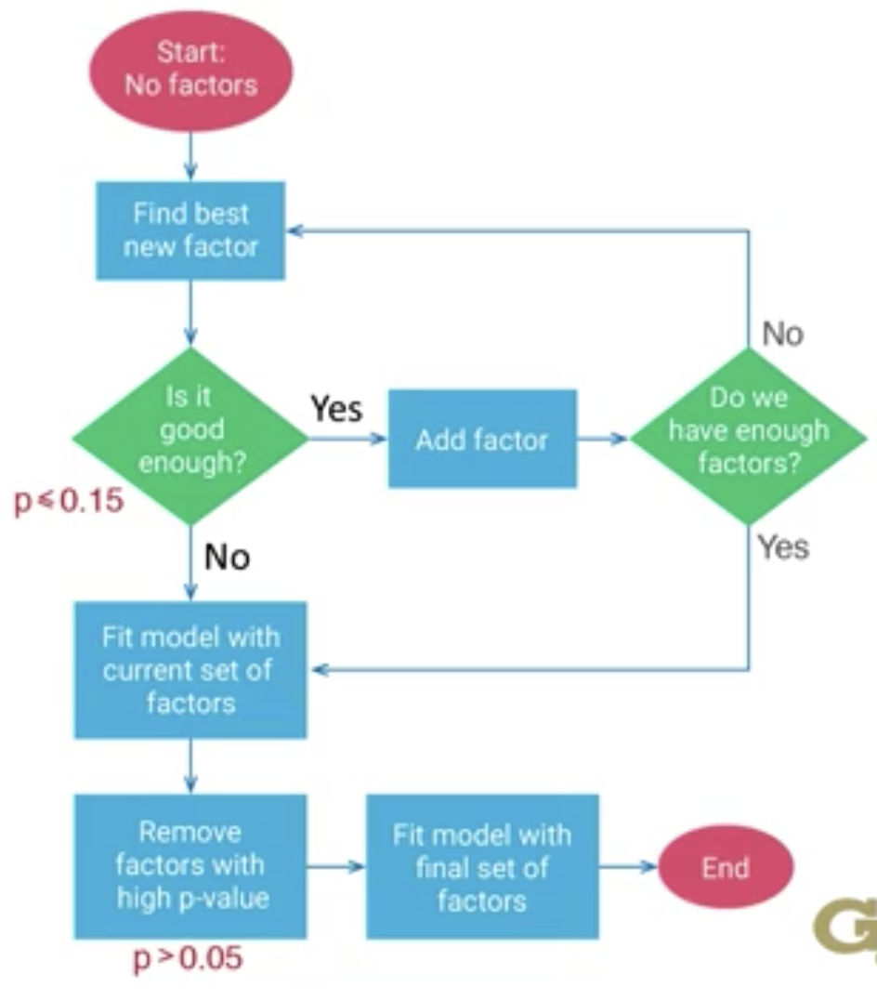
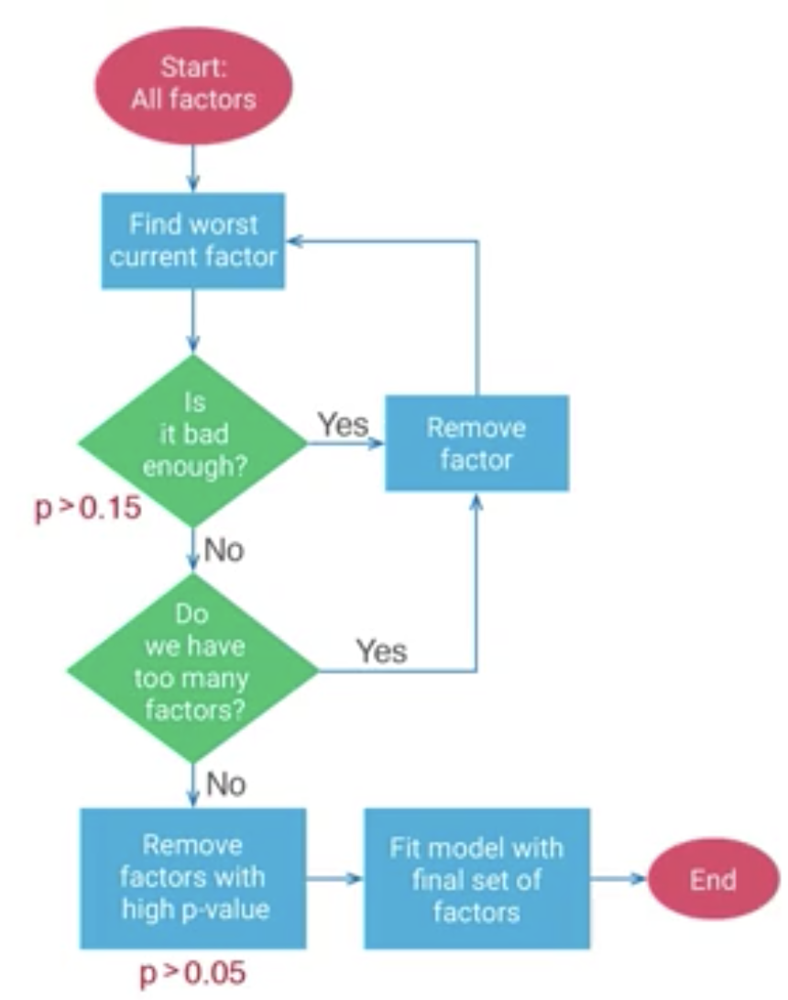
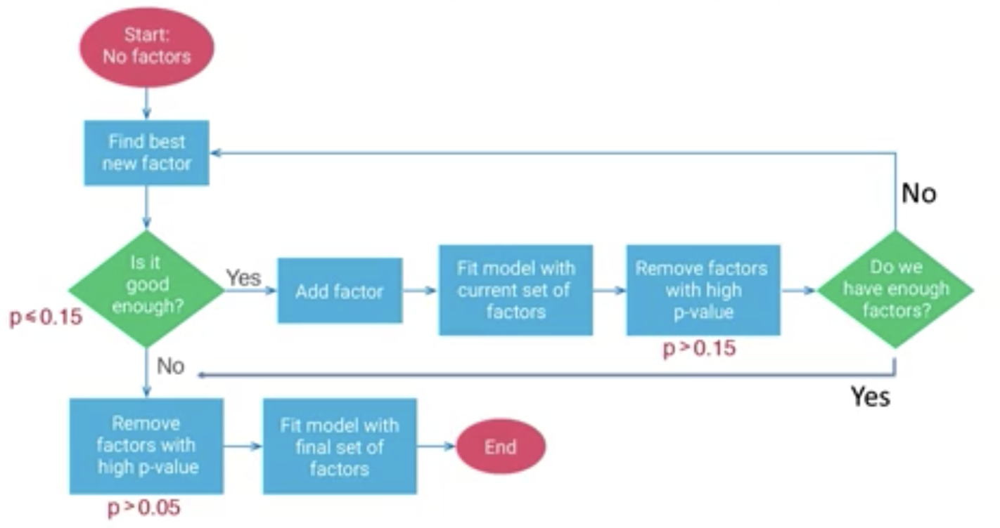

ISYE 6501 Intro to Analytics Modeling Notes
Table of Contents
- 1. Module 01: Intro
- 2. Module 02: Classification
- 3. Module 03: Validation
- 4. Module 04: Clustering
- 5. Module 05: Data preparation
- 6. Module 06: Change detection
- 7. Module 07: Time series
- 8. Module 08: Regression
- 9. Module 09: Advanced Data Preparation
- 10. Module 10: Advanced Regression
- 11. Module 11: Variable Selection
- 12. Module 12: Design of Experiments
- 13. Module 13: Probability-based Models
- 14. Module 14: Missing Data
- 15. Module 15: Optimization
- 15.1. M15L01: Intro to Optimization
- 15.2. M15L02: Elements of Optimization Models
- 15.3. M15L03: Optimization is an art
- 15.4. M15L04: Modeling with binary variables
- 15.5. M15L04a: Discovering the real questions
- 15.6. M15L05: Optimization for Statistical Models
- 15.7. M15L05a: Using Optimization to Customize Statistical Models
- 15.8. M15L06: Classification of Optimization Models
- 15.9. M15L07: Stochastic Optimization
- 15.10. M15L08: Basics of Optimization Algorithms
- 16. Module 16: Advanced Models
- 16.1. M16L01: Non-parametric methods
- 16.2. M16L01a: Matching tests for situations
- 16.3. M16L02: Bayesian modeling
- 16.4. M16L03: Communities in graphs
- 16.5. M16L04: Neural networks and deep learning
- 16.6. M16L05: Competitive models
- 16.7. M16L05a: Competitive model demo
- 16.8. M16L06: Natural language processing
- 16.9. M16L07: Survival models
- 16.10. M16L08: Gradient boosting
- 16.11. M16L08a: Gradient boosting example
1. Module 01: Intro
1.1. What's analytics?
Analytics answers these questions
- Descriptive - what happened
- Predictive - what will happen
- Prescriptive - what action is best
- General questions
1.2. Modeling
- Describe real-life situation with math
- Analyze math
- Turn math answer back to real situation
1.3. Course structure
Enough math intuition and detail
- Models
- Machine learning
- Regression
- Optimizaton
- Cross-cutting
- Data prep
- Output quality
- Missing data
1.4. Three different things are all models
- Real life situation expressed as math
- Analyse the math
- Turn mathematical analyse to real-life solution
1.5. Hence these are all "models":
- Regression
- Regression on size, weight, distance
- Regression estimate = 37+81*Size +76*Wt, etc
2. Module 02: Classification
Definition: putting things into groups
2.1. M1L1: Intro to classification
Types of classification models
- Number of groups
- Number of dimensions
- Can 1 dimension be sufficient to classify?
- Soft vs hard classifiers (is it 100% error-free?)
2.2. M1L2: Choosing a Classifier
Definition of bad classification
- Cost: is one type of mistake worse than the other?
2.2.1. Example: Loan payment (Income vs credit score)
- Plot lines and find one that can separate default vs non-default.
- How do we know the right lines are drawn?
- We want to be as conservative as possible (less error prone)
2.3. M2L3 Data definitions
2.3.1. Data terminology
- Row = data point
- Column = dimension, attribute, feature, predictor, covariate
- Special column = response, outcome
2.3.2. Data types
- Structured data
- Quantitative
- Numbers with meaning
- Categorical
- Numbers without meaning
- Binary data (subset of categorical)
- Unrelated data
- Time series data
- Quantitative
- Unstructured
- Text data
2.4. M2L4: Support vector machines
- Supervised method (algorithm uses known results when training)
- Terminology
- m = number of data points
- n = number of attributes
- xij = j attribute of i data point
- e.g. x51 = credit score of person 5; x52 = income of person 5
- yi = response of data point i
- e.g. 1 if data point is group 1
- -1 if data point is group 2
- Line: \(a_1 x_1\) + \(a_2 x_2\) + … + \(a_n x_n\) + \(a_0\) = 0
- Note the intercept \(a_0\)
- In general: \(\sum_{j=1}^{n} a_j x_j + a_0 = 0\)
- Separation problem: get max distance between lines
- \(2\over{\sqrt(\sum_{j} \left(a_j\right)^2)}\)
- i.e. Mina0 … an: \(\sum_{j=1}^{n}\left(a_j\right)^2\)
- Subject to constraints
2.4.1. When not possible to get full separation
- Then we minimize error
- There's a trade-off between margin and error
- Error for data point is: \[ \text{max} \{ 0, 1-(\sum_{j=1}^{n} a_j x_{ij} + a_0) y_i \} \]
- Total error is: \[ \sum_{i=1}^{m} \text{max} \{ 0, 1 - (\sum_{j=1}^{n} a_j x_{ij} + a_0) y_i \} \]
- Margin denominator: \(\sum_{j=1}^{n}(a_j)^2\)
- We multiply margin by \(\lambda\) to assign its importance of margin vs error.
- Hence, the full equation is: \[ \text{Minimize}_{a_0,...,a_n} \sum_{i=1}^{m} \text{max} \{ 0, 1 - (\sum_{j=1}^{n} a_j x_{ij} + a_0) y_i \} + \lambda \sum_{j=1}^{n}(a_j)^2 \]
2.5. M2L5: What SVM means
- Etymology
- Vector = point
- Support vector = points that holds up (or, supports) a shape. Shape is correctly balanced on parallel lines
- Model determines the "support vectors"
- Automatically from data hence "machine"
- Support can be from top or side
- Looking for max separation i.e. the support vector touches the data points
- Classifier is in between the two support vectors
2.6. M2L6: Advanced SVM
- The constant term a0 can be used to adjust the intercept and hence tweak the SVM model.
- If it's more costly to grant a bad loan, e.g.: \(\frac{2}{3}(a_0-1) + \frac{1}{3}(a_0+1)\)
- For soft classification, you can add a multiplier mj for each type of error:
- mj > 1 for more costly
- mj < 1 for less costly
2.7. M2L7: Scaling and standardization
- Predictive factors may have different orders of magnitude, i.e.
- Income in \(10^5\)
- Credit score in \(10^2\)
- Classifier is \(0 = a_0 + \sum_{j} a_j x_j\)
- Maximise gap by minimizing: \(\sum_{j} a_j^2\)
- Coefficients might be 106 + 5*income + 701*credit score
- Sum of squared coefficients: \(\sum_j a_j^2 = 5^2 + 700^2 = 490,025\)
- Changing credit score by 1 increases the sum by 1,401: \(\sum_j a_j^2 = 5^2 + 701^2 = 491,426\)
- Small change in one coefficient affects the sum a lot due to difference in scales.
- As data has such different scale.
2.7.1. Scaling data
- Common scale is between 0 and 1
- Scale data by factor \[ x_{ij}^{\text{scaled}} = \frac{x_{ij}-x_{\text{min}j}}{x_{\text{max}j} - x_{\text{min}j}} \]
- General scaling between a, b: \[ x_{ij}^{\text{scaled}[b,a]} = x_{ij}^{\text{scaled}[0,1]}(a-b)+b \]
2.7.2. Standardization of data
- Scale to normal distribution
- Common scale is:
- Mean = 0
- SD = 1
- Factor j has:
- mean \(\mu_j = \frac{\sum_{i=1}^n x_{ij}}{n}\)
- SD \(\sigma_j\)
- For each data point \(i\): \[ x_{ij}^{\text{standardized}} = \frac{x_{ij}-\mu_j}{\sigma_j} \]
2.7.3. Choosing between scaling vs standardization
- Scale when:
- Data is in bounded (defined) range, e.g.
- Neural networks
- Optimization models requiring bounded data
- Batting averages (between 0 and 1)
- RGB color scale (0-255)
- SAT scores (200-800)
- Data is in bounded (defined) range, e.g.
- Standardization, examples:
- PCA
- Clustering
- Try both when not clear
- Should be used throughout course even when not stated explicitly
2.8. M2L8: K Nearest Neighbour model (KNN)
- Classification
- e.g. loan dataset with two predictors and a response
- Assume each point has similar characteristics with its neighbors
- Choice of number of points is denoted by \(k\)
- Algorithm to find color (class) of a new point:
- Pick \(k\) closest points (i.e., nearest neighbours) to the new one
- The new point's class is the most common among the \(k\) neighbors
- Complexities
- More than one distance metric (c.f. distance selection topic_).
- Straight line is: \(\sqrt{\sum_{i=1}^n |x_i-y_i|^2}\)
- Attributes can be given more weight if more important, \(w_i\)
- Weights to be found with other techniques e.g. regression
- Unimportant metrics can be removed
- c.f. variable selection topic
- Choose good value of \(k\), c.f. validation @ 3
- More than one distance metric (c.f. distance selection topic_).
3. Module 03: Validation
Check how good a model is
3.1. M3L1: Training, validation and test data
- Cannot calculate accuracy or effectiveness metrics from training dataset
- Since model was trained on it
- This doesn't allow separation of real effects from random effects
- When fitting a model, this captures both real and random effects
- Real effects: exist in all datasets (or subsets)
- Random effects: different in all datasets
- Use a training set of data to fit model
- Use another validation set of data to judge model effectiveness
- When comparing >1 model, use a test dataset.
- e.g. SVM and KNN, with 10 total models, we cannot use the effectiveness metric calculated on the validation set.
- Test data is required as high performing models have above average random effects
- Too optimistic; it might have performed well but also likely received a boost from random effects
- Analogize with models equally good
- Flowchart:

3.2. M3L2: Splitting data
- How much data goes to each set?
- 70 to 90% train, remaining test
- 50 to 70% train, remaining evenly split validation & test
- Methods of splitting data
- Random
- Rotation (take turn selecting data points into training, test, valid across the sets of split data)
- Advantage: in time series data, may avoid all datasets having early/late data
- Need to ensure rotation doesn't introduce bias
- Combined: 60% of Monday data for training, 60^% of Tuesday data for training, etc.
3.3. M3L3: Cross-validation
What happens with important data appears only in one data set e.g., validation?
- Use cross-validation!
- k-fold cross validation
- Split data for testing (e.g. 20%)
- With remaining data, use it for both training and validation by splitting into 4 x 20%, then:
- Train 1, 2, 3, Validate 4
- Train 1, 2, 4, Validate 3
- Train 1, 3, 4, Validate 2
- Train 2, 3, 4, Validate 1
- Summary of k-fold cross-validation:
- Train model on all other parts
- Evaluate model on remaining part
- Average \(k\) evaluations to estimate the model quality.
- \(10\) is commonly selected for \(k\).
- But, the model selected from cross-validation is not used. Coefficients should also not be averaged.
- Once model is selected, retrain with all data
- Advantages of k-fold cross-validation:
- Better uses data
- Better estimates model quality
- Choose model more effectively
3.4. M3L4: Summary
- Build model with training data
- Pick model with validation data
- Estimate performance with test data
4. Module 04: Clustering
4.1. M4L1: Introduction to clustering
- Unsupervised method (response not available for use in training)
- Grouping data points
- Might help discover attributes in the dataset
- Example of use
- Segmenting market of car buyers by:
- Size
- Price
- Versatility, etc
- Personalized medicine
- Locating facilities
- Image analysis
- Exploratory data analysis (different model for each attribute)
- Segmenting market of car buyers by:
- Example: Miles driven vs. Age
4.2. M4L2: Distance Norms
- Straight line distance (Euclidean) \(\sqrt{(x_1-y_1)^2+(x_2-y_2)^2}\)
- Rectilinear distance (Manhattan, 1-norm) \(|x_1-y_1| + |x_2-y_2|\)
- Generalized p-norm (Minkowski) \(\sqrt[p]{|x_1-y_1|^p+|x_2-y_2|^p}\)
- ∞-norm distance
\(\sqrt[\infty]{\sum_{i=1}^n|x_i-y_i|^{\infty}}\)
- sum = \(|x_i-y_i|^{\infty}\)
- \(\sqrt[\infty]{\text{max}_{i}^n|x_i-y_i|^{\infty}}\)
- Largest term dominates the rest, hence simplifies to:
- \(\text{max}_i |x_i-y_i|\)
- Analogize with warehouse picking robot. The operation that takes the longest dominates the total operation time.
4.3. M4L3: K-Means Clustering
- Unsupervised technique
- Steps to implement K-Means:
- Plot data points on suitable axes (e.g., age vs temperature, sepal width vs sepal height)
- Let:
- \(x_{ij}\) = attribute \(j\) of data point \(i\)
- \(y_{ik}\) = \(1\) iif data point \(i\) in cluster \(k\), else \(0\)
- \(z_{jk}\) = coordinate \(j\) of cluster center \(k\)
- Mathematically, but it takes too long: \[ \text{Min}_{y,z}\sum_i\sum_k \sqrt{\sum_{j} (x_{ij} - z_{jk})^2} \] subject to: \(\sum_k y_{ik} = 1\) for each \(i\)
- Practical method:
- Pick \(k\) cluster centers in data
- Assign each point to nearest cluster center
- Recalculate cluster center (centroid)
- Now, data points might not belong to the right cluster
- Go back to assign, then re-calc, then assign, then re-calc iteratively until stable
- K-Means is a heuristic, i.e.:
- it is fast and good
- not guaranteed to find global best solution.
- It is expectation-maximization (EM), and alternates between expectation (finding cluster centers) and maximization (assigning points to clusters)
4.4. M4L4: Practical details for K-Means
Algorithm just assigns outliers to nearest clusters.
- Choosing starting points:
- Run several times with different initial cluster centers
- Algorithm is non-deterministic, i.e. can produce different results when run with different inputs
- Choose the best solution from the results produced
- Handling outliers:
- Discard, but may not be the 'right' answer
- Ask why the outlier happens
- What it means to discard or include the outlier
- Ultimately, algorithm is just a guide. Best solution is what fits the situation.
- Choosing number of clusters. Is adding a cluster always better?
- It may increase the metric (total distance of each data point to their cluster center), hence clustering appears to work better.
- However, it may defeat the purpose of clustering if every cluster just consists of one data point.
- Total distance can be compared to find the 'kink' or 'elbow'.
- After this point, the marginal benefit of adding another cluster decreases.
Elbow diagram:

4.5. M4L5: Clustering for prediction
Given a new point, which cluster should it be in?
- Is point inside cluster?
- Otherwise, what's the nearest cluster center?
- Asked another way: for the range of the dataset, which areas would we assign to each cluster if a new point appears there?
- This is a Voronoi diagram.
4.6. M4L6: Clustering vs Classification
- Since both group data points…
- The difference is what we know about the data points.
- For classification, the correct response is known, i.e.
- supervised learning
- model uses both attributes and response
- For clustering, the 'correct' classification is unknown
- unsupervised learning
- model decides clusters only based on the attributes
- Supervised learning is more common
5. Module 05: Data preparation
5.1. M5L1: Common techniques and problems
- Scale data
- Outliers?
- Extraneous (unnecessary data)
- Complicates the model and
- Makes it harder to interpret the solution
5.2. M5L2: Outliers
- Types
- Point outliers
- one / few points very different from others
- Contextual outlier
- Value far from other points in time (not in absolute value)
- Collective outlier
- Something missing in a range of points, but not sure exactly where. Outlier by omission.
- How to detect?
- Box-and-whisker plot if data can be plotted in 1-dimension
- Box: 25/75th percentile
- Line: 50th percentile
- Whiskers: 10/90th percentile, 5/95th, etc
- Box: 25/75th percentile
- For multi-dimensional, no good way. We can still:
- Fit a model.
- Points with large error might be outlier
- Box-and-whisker plot if data can be plotted in 1-dimension
5.3. M5L3: What to do with outliers?
- Need to understand why there's outliers
- Bad data
- Sensor fail
- Contaminated experiment
- Wrong data input
- Unexpected, real, data
- Need to understand more about the data, e.g.
- Where it came from
- How it was compiled
- Unique situations
- Bad data
5.3.1. Bad data
- Omit the points
- Use imputation to replace the points
5.3.2. Real / correct data
- Outliers are somewhat expected in large datasets
- E.g., for normally-distributed data:
- 4% will be outside 2 σ
- 1e6 data points = 2000 outside 3 σ
- Removing real outliers might make model too optimistic. e.g. not account for actual shipments that take a long time from US to Africa
- Outliers might be due to weather, political events
5.3.3. Another way to handle outliers
- First build a logistic regression model
- This estimated probability of outliers under different conditions
- Next, build the regular model i.e. estimate delivery time under normal conditions
- Use data without outliers
- Report different outcomes…
5.3.4. Summary
- Outliers aren't predictable
- Investigate the data in case you're wrong
6. Module 06: Change detection
6.1. M6L1: Examples
- Usually with time series data
- Determine if action is needed, e.g.,
- Time for machine maintenance?
- Have sales increased?
- Determine impact of some past action, e.g.,
- Did new tax / increase rate decrease sales?
- Did price discount increase sales?
- Determine changes of current actions, e.g.
- Did voting patterns change?
6.2. M6L2: Cumulative sum for change detection
Answers whether mean of the observed distribution gone above a critical level
- xt is observed value at time \(t\)
- μ is mean of \(x\), if no change in distribution
- Hence, \((x_t - \mu)\) is how much the observation is above mean at time \(t\)
- Detecting an increase
\[
S_t = \text{max}\{ 0, s_{t-1}+(x_t-\mu-C) \}
\]
- Determine threshold \(T\) and ask whether St T?
- If running total < 0, it's irrelevant
- There should still be some randomness
- C is a term to control how faster St increases
- Determine threshold \(T\) and ask whether St T?
- Detecting a decrease
\[
S_t = \text{max}\{ 0, s_{t-1}+(\mu-x_t-C) \}
\]
- Is St T?
6.2.1. Interpretation
- Choices of model parameters
- T
- the threshold, above which alarm is raised
- C
- the control term (smaller = more sensitive)
- Consider / trade off:
- How costly is it to delay detection? (false negative) -> if it's costly, use small C
- How costly is false positive? -> if it's costly, use big C
- Use a control chart and plot St vs t with \(T\) as a horizontal line

6.3. M6L3: Ethics: Honestly reporting our results
- Be faithful to data
- Have sound conclusions drawn from the model and not your own conceptions
- Always be honest and true to your analysis
7. Module 07: Time series
7.1. M7L1: Introduction to exponential smoothing
- Data for the same response is known for many time periods
- Examples:
- Temperature readings
- Price of stocks
- Daily sales of hamburgers
- Blood pressure readings
- Variation in time series data:
- Trends increase or decrease
- Cyclical variables over a year or a week
7.1.1. Random variation
- No underlying reason for the variation
7.1.2. Definitions:
- \(S_t\): expected baseline response at time period \(t\)
- \(x_t\): the observed response at \(t\)
- Seeing a increase over time, is it
- A real increase?
- Random?
- There are two ways to answer:
- It's a real increase, hence \(S_t = x_t\)
- the observed reading is real indicator of revised baseline
- It's random, hence \(S_t = S_{t-1}\)
- today's baseline = yesterday's baseline
- It's a real increase, hence \(S_t = x_t\)
7.1.3. Exponential smoothing method
Combines both, i.e. \(S_t = \alpha x_t + (1-\alpha)S_{t-1}\)
0 < α <1
α example value of α randomness trust small → 0 (e.g. 0.01) high previous baseline i.e. \(S_{t-1}\) large → 1 (e.g. 0.99) low today's estimate i.e. \(x_t\) - How to start? \(S_1 = x_1\)
7.2. M7L2: Trend and cyclic effects
Complexities!
- Trends, increasing or decreasing
- Cyclical patterns, e.g. annual, weekly, daily
7.2.1. Trends
- \(T_t\): the trend at time period \(t\)
- \(S_t = \alpha x_t + (1-\alpha)(S_{t-1}+T_{t-1})\)
- \(T_t = \beta(S_t - S_{t-1}) + (1-\beta)T_{t-1}\)
- Initial condition: \(T_1=0\)
7.2.2. Cyclical patterns
- Make cycles additive: behaves like trend
- Make cycles multiplicative: more notation required
- L = length of cycle
- \(C_t\) = the multiplicative seasonality factor
- This inflates or deflates the observation
- New baseline formula \[ S_t = \frac{\alpha x_t}{C_{t-L}} + (1-\alpha)(S_{t-1}+T_{t-1}) \]
- Need to use the factor from \(L\) time periods ago
- as that's the most recent cyclic factor we have from that part of the cycle
- Update the cyclic factor in a similar way i.e.:
- \(C_t = \gamma(x_t/S_t) + (1-\gamma)(C_{t-L})\)
- C1, …, CL = 1
- meaning there's no initial cyclic effect
- If C = 1.1 on Sunday:
- sales are higher by 10% just because it's Sunday
- Initial values: first \(L\) are set to 1. Multiplying by 1 = no effect
7.2.3. Summary
- Exponential smoothing
- Single
- Double (with trend)
- Triple (with trend and cyclic effects)
- AKA Winter's method, or Holt-Winters
7.3. M7L3: Etymology (what the name means)
Example equation when \(\alpha = \frac{1}{2}\): \(S_t = 0.5 x_t + 0.5 S_{t-1}\)
- Smoothing
- Note: when xt is high, St is not as high, as \((1-\alpha)S_{t-1}\) pulls it down
- Conversely: when xt is low, St is not as low, as \((1-\alpha)S_{t-1}\) pulls it up
- Peaks and valleys are smoothed out

- Exponential
- Each \(S_{t-1}\) actually contains every previous value of x!
- When written or expanded out, e.g. \[ S_t = \alpha x_t + (1-\alpha)S_{t-1} \] \[ S_{t} = \alpha x_t + (1-\alpha)[\alpha x_{t-1} + (1-\alpha)S_{t-2}] \] \[ S_{t} = \alpha x_t + (1-\alpha)\alpha x_{t-1} + (1-\alpha)^2S_{t-2} \]
- Each St is weighed by (1-α) to an increasing exponent
- This means not only the current observation matters; instead, every past observation contributes to the current baseline estimate
- However, more recent observations are more important as they have higher weight
- Each \(S_{t-1}\) actually contains every previous value of x!
7.3.1. Summary
- Exponential smoothing smooths out jumps in observed data
- It's an exponential weighting of all past observations
- More recent observations are more important to the current baseline estimate
7.4. M7L4: Forecasting
- Recap: \(S_t = \alpha x_t + (1-\alpha)S_{t-1}\)
- Prediction:
- \(S_{t+1} = \alpha x_{t+1} + (1-\alpha)S_{t}\)
- However xt+1 is unknown
- Best guess for xt+1 is \(S_t\)
- Our forecast for \(t+1\) is hence (after substituting):
\[
F_{t+1}=\alpha S_t + (1-\alpha) S_t \\
F_{t+1} = S_t \\
F_{t+k} = S_t \text{when } k=1, 2, ...
\]
- note that forecast error becomes larger for larger \(k\)
- If including trend:
\[
S_t = \alpha x_t + (1-\alpha)(S_{t-1}+T_{t-1}) \\
T_t = \beta (S_t-S_{t-1})+(1-\beta)T_{t-1} \\
F_{t+1} = S_t + T_t \\
F_{t+k} = S_t + kT_t, k=1,2,...
\]
- Best estimate of next baseline
- the most current baseline estimate
- Best estimate of the trend
- the most current trend estimate
- If including multiplicative seasonality:
\[
S_t = \alpha x_t/C_{t-L} + (1-\alpha)(S_{t-1}+T_{t-1})
F_{t+1} = (S_t+T_t)C_{(t+1)-L}
\]
- Best estimate of next time period seasonal factor
- the corresponding (lagged) seasonal factor, i.e. \(C_{t+1}=C_{t+1-L}\)
- Finding the right α, β, γ: use optimization, to be covered in future
- \(\min{(F_t-x_t)^2}\)
7.5. M3L5: ARIMA
AutoRegressive Integrated Moving Average.
- ARIMA theory is not covered in IAM.
7.5.1. (I): Differences
- Exponential smoothing assumes stationary data, i.e.
- mean, variance, other measures are constant over time
- ARIMA works for data that's not stationary
- if differences in data are stationary
- 1st order difference D(1)
- difference of consecutive observations, i.e. \(D_{(1)t}=(x_t-x_{t-1})\)
- 2nd order difference D(2)
- difference of the differences i.e. \(D_{(2)t}=(x_t-x_{t-1})-(x_{t-1}-x_{t-2})\)
- dth order difference D(d)
- diff… d times
- if differences in data are stationary
7.5.2. (II): Autogression
- Predicting current values based on previous period's values
- Regression: predicting value based on other factors
- Auto: use earlier values to predict. Only works with time series
- When used to forecast, exponential smoothing is an order-∞ autoregressive model
- All previous values are used to make current prediction
- Order-p autoregressive model: St is function of \(\{x_t, x_{t-1}, ..., x_{t-(p-1)}\}\)
- Only go back \(p\) periods
- ARIMA: combines autoregression and differencing
- Autoregression on the differences
- Use \(p\) time periods of previous observations to predict \(d^{th}\) order differences
7.5.3. (III): Moving Average
- Use previous errors εt as predictors
- \(\epsilon_t = (\hat{x_t}-x_t)\)
- Order-q moving average
- go back \(q\) time periods
- \(\epsilon_{t-1}, \epsilon_{t-2}, ..., \epsilon_{t-q}\)
7.5.4. ARIMA model
ARIMA (p,d,q) model
- \(d^{th}\) order differences
- \(p^{th}\) order autoregression
- \(q^{th}\) order moving average
- Equation: \[ D_{(d)t} = \mu + \sum^p_{i=1}\alpha_i D_{(d)t-i} - \sum^q_{i=1} \theta_i (\hat{x}_{t-i}-x_{t-i}) \]
- Software can find \(d, p, q\)
- Extensions
- Add seasonality (out of scope for IAM)
- Specific models:
- ARIMA(0,0,0)
- white noise
- ARIMA(0,1,0)
- random walk
- ARIMA(p,0,0)
- AR (autoregressive) model
- ARIMA(0,0,q)
- MA (moving avg) model
- ARIMA(0,1,1)
- basic exponential smoothing model
- Can be used for short-term forecasting
- ARIMA is better than ES when data is more stable with fewer peaks, valleys, outliers
- ARIMA needs 40+ historical data points to work well
7.6. M7L6: GARCH
- GARCH
- Generalized Autoregressive Conditional Heteroskedasticity
To estimate or forecast the variance
7.6.1. Variance
- Estimates the amount of error
- E.g. forecasting demand for trucks
- tell you how much forecast might be higher/lower than the actual value you see (later) to plan accordingly
- In investment (portfolio optimization):
- Balance the expected return in investment with amount of volatility.
- Riskier
- higher expected return
- Less risky
- lower expected return
- Variance is a proxy for amount of volatility or risk
- Balance the expected return in investment with amount of volatility.
7.6.2. GARCH
\[ \sigma^2_t = \omega + \sum^p_{i=1}\beta_i\sigma^2_{t-1}+\sum^q_{i=1} \gamma_i \epsilon^2_{t-i} \] It looks very similar to ARIMA Equation, but: Differences:
- GARCH deals with variances and squared errors
- ARIMA deals with observations and linear errors
- GARCH deals with raw variances
- ARIMA deals with differences of variances
7.6.3. Summary - three models for time series analysis
- Exponential smoothing
- ARIMA, a generalization of exponential smoothing
- GARCH, an ARIMA-like model for analyzing variance
8. Module 08: Regression
8.1. M8L1: Intro to Regression
8.1.1. What questions can regression answer?
- How do systems work? (descriptive)
- What will happen in the future? (predictive)
8.1.2. Simple linear regression
- Linear regression with one predictor, e.g. \(y = a_0 + a_1x+1\)
- Date point \(i\)'s prediction error \(= y_i - \hat{y}_i -(a_0+a_1x_1)\)
- Sum of squared errors \(=\sum^n_{i=1}(y_i - \hat{y}_i)^2\) \(=\sum^n_{i=1}(y_i-(a_0+a_1x_1))^2\)
- Best fit regression line
- Minimizes sum of squared errors
- Defined by a0 and a1
- Underlying math
- Minimize convex quadratic function
- Set partial derivatives to 0
- Solve simultaneous equations
8.2. M8L2: Maximum Likelihood and Information Criteria
8.2.1. Likelihood
- Measure the probability density of a parameter set
- the parameters that give the highest probability
- Assuming:
- Errors are normally distributed with mean 0, variance σ2, independently and identically distributed
- Observations are z1 to zn
- Model estimates are y1 to yn
- Probability density of observing zi if true value yi is \[ \frac{1}{\sigma\sqrt(2\pi)}e^-\frac{(z_u-y_i)^2}{2\sigma^2} \]
- Joint density over \(n\) terms \[ \prod^n_{i=1}\frac{1}{\sigma\sqrt(2\pi)}e^-\frac{(z_u-y_i)^2}{2\sigma^2} \\ = (\frac{1}{\sigma\sqrt{2\pi}})^n e^-\frac{1}{2\sigma^2}\sum^n_{i=1}(z_i-y_i)^2 \]
- Hence to minimize \(\sum^n_{i=1}(z_i-y_i)^2\) over a0, …, am: equals to minimizing \(\sum^n_{i=1}(z_i-(a_0 + \sum^m_{j=1}a_jx_{ij}))^2\)
8.2.2. Maximum likelihood fitting
- Simplest example is regression with i.i.d. errors
- Complex examples:
- Different estimation formulas
- Different error assumptions
- Good software can handle complex cases
8.2.3. Akaike Information Criterion
- L*
- maximum likelihood value
- \(k\)
- number of parameters being estimated
- AIC
- \(2k-2\log(L^{*})\)
- Penalty term
- balances likelihood with simplicity, helps avoid overfitting
8.2.4. Corrected AIC (AICc)
Use for smaller datasets. \[ AIC_c = AIC + \frac{2k(k+1)}{n-k-1} \\ = 2k-2\log(L^{*})+\frac{2k(k+1)}{n-k-1} \]
8.2.5. AICc example
- Model 1: AIC 75; Model 2: AIC 80
- Relative likelihood equals: \[ e^\frac{AIC_1-AIC_2}{2} \\ = 8.2% \]
- Hence, Model 2 (larger AIC) is 8.2% as likely as Model 1 to be better
- Model 1 is probably better
8.2.6. Bayesian Information Criterion
- BIC: \[ k\log(n)-2\log(L^{*}) \]
- Similar to AIC, but
- bigger penalty term than AIC's penalty term
- encourages models with fewer parameters
- Use BIC when there are more data points than parameters
Rule of thumb for |BIC1 - BIC2|
value interpretation for smaller BIC model >10 very likely better 6-10 likely better 2-6 somewhat likely better 0-2 slightly likely better
8.2.7. Summary
- No definite rules for AIC, BIC, maximum likelihood
- Can look at all 3 to decide what's best
8.3. M8L3: Using Regression
8.3.1. Regression coefficients
- a0, a1, …, am for the equation:
- \(y=a_0+a_1x_1+...+a_mx_m\)
- Example for baseball, descriptive question:
- How many runs is associated with every homerun
- Response: how many runs are scored by a team
- Predictors:
- Number of HR
- Triples
- Doubles
- Singles
- Outs
- Double Plays
- Stolen bases, etc
- Equation: \[ \text{Runs scored} = a_0 + a_1\text{Number of HR} + a_2\text{Number of triples} + ... + a_7\text{Number of stolen bases} \]
- a1 = 1.4
- Means that every HR adds 1.4 runs scored on average, ceteris paribus
- Example: height, predictive question:
- How tall will a 2-year old be as an adult?
- Response: a person's adult height
- Predictors:
- Father's height
- Mother's height
- Height at age 2
- Male, female
- Equation: \[ \text{Adult height} = a_0 + a_1\text{Father's height} + a_2 \text{Mother's height} + ... + a_4\text{Male or female} \]
8.4. M8L4: Causation vs Correlation
- Causation
- one thing causes another thing
- Correlation
- two things tend to happen / not happen together, but neither one causes the other
8.4.1. Example: winter recreation
- y: hours per day spent outdoors in winter
- x1: city's average daily winter temperature
- Equation: \(y=a_0+a_1x_1\)
- Correlation between y and x1
- with low p-value of a1
- Does higher temperature in winter cause people to go outside?
- Probably
- Reversing the equation:
- y: hours per day spent outdoors in winter
- x1: city's average daily winter temperature
- Equation: \(x_1 = b_0 + b_1y\)
- Same correlation between y, x1
- Same p-value of b1 and a1
- Hence, does spending more time outside cause higher winter temperatures?
- No
8.4.2. Example: tiredness vs scruffiness
- Neither one caused another, they're just related to a common tired factor, kids
8.4.3. How to tell causation?
- When is there causation?
- Cause before effect
- Idea of causation makes sense
- No outside factors can cause the relationship (hard to ensure this - need to consider all other factors)
- Be careful before claiming causation
8.4.4. Meaningless correlations
- Per capita consumption of mozzarella with number of civil engineering doctorates awarded
- link
8.5. M8L5: Transformations and Interactions
- Recall: \(y=a_0+a_1x_1+...+a_mx_m\)
- What if the fit isn't linear for x?
- Answer: transforming the data!
8.5.1. Transforming the data
- Quadratic regression, e.g. \[ y = a_0 + a_1 x_1 + a_2 x_1^2 \]
- Trigonometric: \[ y = a_0 + a_2 \sin(x^2) \]
- Response transform: \[ \log(y) = a_0 + a_1 x_1 + ... + a_m x_m \]
- etc.
- Box-Cox transforms can be automated
8.5.2. Interaction terms, e.g. product of inputs
- Child's heights might be influenced by product of father and mother's heights (\(x_1x_2\))
- \(y = a_0 + a_1 x_1 + a_2 x_2 + a_3 (x_1 x_2)\)
- Treat x1 x2 as new input, x3
- Then find best fit coefficients in the last module
8.6. M6L6: Output
8.6.1. p-Values
- Estimates the probability that coefficient is actually 0
- A hypothesis test
- If p-value is big (>0.05), the coefficient is likely 0, hence remove its attribute from the model
- Other thresholds
Threshold Number of factors included Risk Higher (>0.05) More factors included Irrelevant factors included Lower (<0.05) Less factors included Relevant factors left out - Warnings
- With lots of data:
- p-values can get small and seem significant even when attributes aren't related to response
- Even when meaningful, p-values only represent probabilities
- With 100 attributes having p-value 0.02:
- Each of them have 2% chance of not being significant
- Hence on average 2/100 are actually irrelevant
- With lots of data:
8.6.2. Confidence interval
- Mostly given at 95% level around the coefficient
- Range of where the coefficient probably lies
- And how close that is to zero
- Related to p-value
8.6.3. T-statistic
- \(\frac{\text{Coefficient}}{\text{Std error}}\)
- Related to p-value
8.6.4. Coefficient itself
- If very small, then when multiplied by attribute, it's likely irrelevant
9. Module 09: Advanced Data Preparation
9.1. M9L1: Box-Cox Transformations
- Models may require data to be normally distributed
- What happens when this assumption isn't valid in the data?
- Results will have bias in this case
- Data exhibits heteroskedasicity
- i.e., variances are not i.i.d.
- Another example is time series data, where later values have higher variance
- Box-Cox is a logarithmic transformation that:
- Stretches smaller range to increase variability
- Shrinks larger range to reduce variability
- E.g. \(t(y)=\frac{y^\lambda-a}{\lambda}\)
- t(y) can become close to normally distributed
- Need to remember to check for normality (e.g., with Normal Q-Q plot)
9.2. M9L2: Detrending
- For time series data with trends, i.e. an increase or decrease over time
- For example: increase in price of gold over time but need to account for inflation over time (value of $ decreases over time)
- The trend if not correct can mess up a factor-based analysis
- Can detrend:
- Response
- Predictors
- Factor-based model (consider whenever using these models)
- Regression, SVM, etc.
- How to detrend:
- Factor by factor for one-dimensional regression, y=a0+a1x
- Simple, works well to remove trend for factor-based analysis
- This requires going factor by factor and fitting a linear regression model on it
- E.g. for simple linear regression for gold prices:
- Price = - 45600 + 23.2xYear
- Detrend end price = Actual price -(-45600+23.2+year)
- This produces a similar graph to the inflation-adjusted rate
- Useful when we dont know the response (as in most cases)
- Factor by factor for one-dimensional regression, y=a0+a1x
9.3. M9L3: Intro to PCA
- Works on high dimensional and correlated data
- Which subset of features are important to predict response?
- e.g. which stocks can predict how well the market performs the next day?
- 6K securities
- Remove days that have major events
- Issues:
- 6K predictors need many many data points to avoid overfitting (need to reduce predictors)
- However, even with unlimited data, the underlying situation could have changed over time
- E.g. TSLA stock is good predictor now but it was only listed 5 years ago
- High correlation between predictors
- 6K predictors need many many data points to avoid overfitting (need to reduce predictors)
- PCA transforms data by:
- Removing correlations within predictors
- Ranking coordinates by importance
- Most important are first
- By concentrating on first n principal components
- This reduces random effects and
- These PCs have higher signal to noise ratio
- Graphically:
- rotate plot until its orthogonal to the correlation
- If D1 and D2 are the new PCs,
- D1 (that explains more variance) will be the first factor
9.4. M9L4: Using PCA
9.4.1. Math of PCA
- Definitions
- \(X\)
- initial matrix of data
- \(x_{ij}\)
- jth factor of ith data point
- Scale to:
- \(\frac{1}{m}\sum_i x_{ij} = \mu_j = 0\)
- To find all eigenvectors of XT X, where:
- V
- Matrix of eigenvectors, sorted by eigenvalue
- V
- [V1 V2 … ]
- Vj
- jth eigenvector of XT X
- PCA is a linear combination:
- 1st component is XV1, then 2nd is XV2, …
- kth new factor for ith data point: \[ t_{ik} = \sum^m_{ik} x_{ij}v_{jk} \]
- tik is the factor after PCA
9.4.2. PCA as linear combination
- It removes correlation between factors
- In order to have fewer variables/factors in the model:
- Choose to include only first n principal components
- PCA can also deal with non-linear functions, using kernels. This is similar to SVM modeling
9.4.3. PCA for regression
- How to interpret the new model in terms of original factors?
- Example: PCA finds \(L\) new factors (each \(t_{ik}\)), and regression coefficients b0, b1, … bL: \[ y_i = b_0 + \sum^L_{k=1}b_k t_{ik} \\ = b_0 + \sum^L_{k=1}b_k [\sum^m_{j=1} x_{ij} v{jk}] \\ = b_0 + \sum^m_{j=1}x_{ij} [\sum^L_{k=1}b_kv_{jk}] \\ = b_0 + \sum^m_{j=1}x_{ij}[a_j] \]
- Each t vector does not have nice intuitive explanations as they are linear combinations of original factors.
- Hence just plug in the transformation for each t factor: \[ a_j = \sum^L_{k=1}b_kv_{jk} \]
9.4.4. Summary of PCA
- Use PCA for high-dimensional and correlated data
- PCA removes these correlations and ranks coordinates by importance (i.e., variability explained)
- PC1 > PC2 > PC3, etc
- PCA can be transformed back to the original factor space to get intuitive explanations
- PCA allows use of fewer variables
- Pick the ones that explain the most variability
9.5. M9L5: Eigenvalues and Eigenvectors
9.5.1. Initial example
- Definitions:
- \(A\)
- a square matrix
- \(v\)
- a vector such that \(Av=\lambda v\)
- \(V\)
- eigenvector of \(A\)
- \(\lambda\)
- eigenvalue of \(A\), i.e. det(A-λ I) = 0. Every λ is eigenvalue of A
- Given λ, solve \(Av=\lambda v\) to find the eigenvector \(v\)
9.5.2. Important: know how eigenvalues and eigenvectors are important to PCA
- With a scaled matrix \(X\) of data, and xij is factor value for ith data point after scaling,
- Find eigenvectors v1 … vn of \((X^TX)\)
- Then, find the principal components:
- Multiply \(X\) by the eigenvectors
- \(Xv_1, Xv_2, ..., Xv_n\) are the principal components
- i.e. the transformed set of orthogonal coordinate directions
9.6. M9L6: PCA: The good and the bad
- Summary

- D1 has more explanatory power (vaariation)
- But it may not be the most helpful for explanatory/predictive modeling
- PCA depends only on the independent variables, not the response variable
- It's possible response is affected by variables with low variability instead of those with high variability!
9.6.1. Example where PCA is good
- Assume PCA is used for classification
- PC1 has most of the variance and PC1 can classify red and blue points

9.6.2. Example where PCA is bad
- PC1, though it has more variance, cannot classify the red and blue points
- PC2 has less variance but it can classify the points exactly

9.6.3. Summary
- We still use PCA (or try to!) as dimensions have higher variation specifically because they contain more information
- However, this is not always true
- PCA is a helpful approach to try
10. Module 10: Advanced Regression
Midterm 1 covers up to Module 10
10.1. M10L01: Introduction to CART
Classification and Regression Trees
10.1.2. Recall
In simple linear regression, e.g.: impact of marketing email on recipient spending.
- Predictors:
- Demographics e.g. age, sex, number of children, income
- Purchasing factors e.g. amount spent per month
- Binary factor e.g. was email received and opened
10.1.3. What if responses can be differentiated by a factor?
(The above example of simple linear regression assumes every data point behaves the same way) If each group instead have their own characteristics and responses, two regressions can thus be fitted, e.g.:
- 25 years or younger \(\text{Money spent}=50+13.75\times\text{Number of Children}+0\times\text{Income over 30,000}+\text{...}\)
- older than 25 \(\text{Money spent}=32+28.13\times\text{Number of children}+7.13\times\text{Income over 30,000}+\text{...}\)
10.1.4. Further splits are possible
- Each branch is further split
- Each ending is a "leaf"
- Descriptively: Each leaf's coefficients explains behaviour in that leaf
- Predictively: Each leaf's regression model can be used to predict a new point in that branch.
- Each branch can run \(R^2\) and those with low \(R^2\) can be investigated/improved.
10.1.5. Disadvantages
- Lots of computations and regressions
- Fewer and fewer data points in each node
10.1.6. Other places to use trees
- The branching concept can be applied to:
- Logistic regression model
- fraction of node's data points with True response
- Classification model
- Most common classification among node's data points
- Decision model
- Each leaf is the decision "do I send a marketing email?"
- Logistic regression model
10.1.7. Common questions
- How to choose the branches?
- When to stop branching?
- Why is this called a regression tree?
10.1.8. Etymology of "tree"

10.2. M10L02: Branching
10.2.1. Main questions
- Which factors are used to decide on branching?
- How to split data?
In practice, no good algorithm to help decide. Instead, branch on 1 factor at a time.
10.2.2. Branching methods
- Start with half of data and run a regression
- Split the data into 2 halves based on some factor we can branch from (e.g. age >25)
- For each leaf:
- Calculate variance of response amongst all data points in each leaf
- Test splitting on each factor to see how much lower total variance of two branches would be vs. the least variance.
- Choose the factor with lowest total variance.
- Make split iif:
- Enough data points in each branch
- Decrease is lower than threshold δ
- Otherwise, don't split the leaf
- Go backwards to prune using the 2nd half of data not used in initial branching. For each pair of leaves created in each branch:
- Use the other half of data in each branch to see if estimation error was improved by branching
- If error increases/no change, then remove branch
- Else, keep the branch
- Use the other half of data in each branch to see if estimation error was improved by branching
10.2.3. Generic branching concept
Overfitting can be costly; make sure the benefit of each branch is greater than its cost
Key ideas
- Use a metric related to model quality
- Find 'best factor' to branch with
- Check: did this improve the model?
- If not, prune the branch back.
Rejecting potential branches
- Low improvement benefit
- Some side of branch has too few data points after branching
- Each leaf should contain ≥5% of original data (we don't want to over-fit the model)
10.3. M10L03: Random Forests
10.3.1. Intro summary
- Introduce randomness
- Generate lots of random trees
- Each has its strengths and weaknesses
- Key concept: average better than single tree
10.3.2. Introducing randomness
via bootstrapping
- With \(n\) number of original data points, we make trees each with \(n\) points.
- However, some points can be picked multiple times while others get picked 0 times.
- When branching:
- Not as before (before: we choose 1 factor at a time)
- In RF: pick a small number of factors \(X\)
- Choose the best factor in that set to branch on
- Common number of factors used: \(1+\log(n)\)
- No need to prune tree
10.3.3. Note
- Each tree has slightly different data
- Will end up with lots of different trees (500-1000 are common)
- Each tree gives a slightly different regression model
- Which one to use?
- Regression trees: use the average predicted response
- Classification trees: use the most common predicted response
- Benefits of RF:
- Better overall estimate
- Average between tree can somewhat address over-fitting
- Disadvantages of RF:
- Harder to explain and interpret results
- Cannot explain how variables interact, or how some sequence of branches is helpful/meaningful (which can be found in single tree)
- Can't give specific model from the data
10.3.4. Summary of RF
- Method: introduce randomness into the trees
- Good as 'black box' predictor
- Cannot give much detailed insight
10.4. M10L04: Explainability and Interpretability
How easy or not it is to understand how models create their output?
10.4.1. Example: linear regression
\[y=a_0 + \sum^n_{j=1}a_j x_{ij}\] To answer "how is the value of \(y\) affected by different values of the predictor?" with:
- y
- Number of tickets sold this year
- x1
- Salary of top 4 stars
- x2
- Number of movies with similar plots this year
- x3
- Rated R or more restrictive (1=yes)
- x4
- Number of days left in the year
- a0
- 1,000,000
- a1
- 0.25
- a2
- -1,000,000
- a3
- -1,000,000
- a4
- 20,000
The interpretation is thus:
- Baseline is 1,000,000 tickets (a0)
- Salary of star, each dollar increases number of tickets sold by $0.25 (a1)
- Similar movie: each similar movie decreases number of tickets sold by 1,000,000 (a2)
- Restrictive rating: decreases number of tickets sold by 1,000,000
- Days left in year: each day increases number of tickets sold by 20,000
10.4.2. Example: regression tree
- With the same values above, it becomes a long ifelse statement
- Can describe detail of tree but it's not helpful for understanding
10.4.3. Example: random forests
- If one tree is hard to explain, 500 are even worse
- Although random forests give relative branching importance of each variable,
- They do not say how
- Hence RF are not precise for interpretability or explainability
10.4.4. Comparisons
| Model | Explainability | Performance |
|---|---|---|
| Linear regression | Higher | |
| Regression tree | Medium | |
| Random forest | Lower | Sometimes higher |
More explainable models:
- help us understand "why"
- help decision makers to choose between models
- can be a legal requirement, e.g. in finance
However, less explainable models can give better results at times as they can identify and model more complex patterns
10.4.5. Tradeoff
Pay attention to tradeoffs when proposing a model:
| Explainability | Value | Adoption | Legal requirement |
|---|---|---|---|
| Less | Potentially more | ? | ? |
| More | ? | More likely | Might be required |
10.5. M10L05: Confusion Matrices
Answers: How to measure how well a classification-type model works?
This is a confusion matrix:
| Model | Classification | ||
|---|---|---|---|
| Yes | No | ||
| True | Yes | Correct | Wrong |
| Classification | No | Wrong | Correct |
It shows how much the model is confusing the two categories.
10.5.1. Details
| Model | Classification | ||
|---|---|---|---|
| Yes | No | ||
| True | Yes | True Pos | False Neg |
| Classification | No | False Pos | True Neg |
- Positive: model says it's in the category
- Negative: model says it's NOT in the category
- True: model got it right
- False: model got it wrong
10.5.2. Definitions
- Sensitivity
- TP/(TP+FN), i.e. TP / All actual positives
- Specificity
- TN/(TN+FP), i.e. TN/ All actual negatives
Others: don't memorize, just refer.
10.6. M10L06: Situationally-Driven Comparisons
10.6.1. Example: from spam detection
| Model | Classification | ||
|---|---|---|---|
| Yes | No | ||
| True | Yes | 490 | 10 |
| Classification | No | 100 | 400 |
- Cost: $0 for correct classification
- $0.04 to read spam
- $1 to miss a real message
- If 50% of email is spam, the total cost is ∑:
- 490 × $0 + 440 × $0 = 0
- 10 × $1 = $10
- 100 × $0.04 = $4, i.e.
$0.014 per email
- If 40% of email is spam: total cost is ∑:
- 490 × 0.6/0.5 × 0 + 400 × 0.4/0.5 \ times 0 = $0
- 10 × 0.6/0.5 × $1 = $12
- 100 × 0.4/0.5 × $0.04 = $3.2
$0.0152 per email
10.6.2. Evaluating quality / changing metrics
- E.g. make model stricter that can reject more spam
- This can make model reject more spam, but also cause more false negatives (which are much more costly) Hence overall cost is higher at $52 ($0.104 per email)
10.7. L10L07: Advanced Topics in Regression
10.7.1. Poisson regression
Use when response follows a Poisson distribution i.e. \[ f(z) = \frac{\lambda^Z e^{-z}}{z!} \] Examples:
- Count of arrivals at airport security
- Arrival rate might be function of time
- Hence, estimate λ(x)
10.7.2. Regression splines
Spline: function of polynomials that connect to each other

- Different functions are fitted to different parts of the data set
- Hence, smoothens connections between parts
- "Order-k" regression spline means that polynomials are all order k.
- Example: multi-adaptive regression splines (MARS)
- Called "Earth" in many stats libraries
10.7.3. Bayesian regression
- Start with:
- Data AND
- Estimate of how regression coefficients and random error is distributed
- Example: to predict how tall a child will be as an adult, based on:
- Data: heights of child's parents
- Expert opinion: starting distribution, coefficients of father's and mother's heights are normally distributed between 0.8 and 1.2
- Then use Baye's theorem to update estimate
- Helpful when data is lacking:
- Combines expert opinion with the data we do have.
- Can replace expert opinion with a broad prior distribution (e.g., uniform over a large interval) as seed data
10.7.4. k-Nearest Neighbour Regression
- Similar to KNN for classification
- Hence, KNN can be used for both regression and classification
- Implementation:
- No estimate of prediction function (function-less)
- Plot all data
- To predict response for a new point:
- Average response of \(k\) closest data points
- Can be made fancier, e.g.:
- Weight each dimension of distance
- Removing dimensions that are not predictive
11. Module 11: Variable Selection
- Factor based models:
- Classification
- Clustering
- Regression
11.1. M11L1: Introduction
11.1.1. Why bother limiting factors?
- Prevents overfitting
- When number of factors close to number of data points
- Cause bad estimates
- Model fits too closely to the random effects
- When number of factors close to number of data points
- Simplicity
- Simple models better than complex models
- Less data required
- Less chance of insignificant factors
- Easier to interpret
- Factors can be illegal to use
- race, sex, religion, marital status cannot be used to make credit decisions
- factors correlated to these also cannot be used
- Simple models better than complex models
11.2. M11L2: Models for variable selection
11.2.1. Forward selection
- Start with no factors, then add 
11.2.2. Backward elimination
- Start with all factors, then eliminate 
11.2.3. Stepwise regression
- Combines forward selection and backward elimination 
11.2.4. Types of approaches
- Greedy
- Decisions are made stp by step
- Known as Greedy Algorithm
- At each step, take one thing that looks best
- Doesn't consider future options
- Global (see below)
- Optimization-based
- Needs scaling!
11.2.5. Lasso approach
- Add constraint to standard regression equation
- Still min SSE \[ \sum^m_{i=1}(y_i - (a_0 + \sum^n_{j=1}a_jx_{ij}))^2 \] and keep:
- Sum of coefficients less than threshold T \(\sum_{j=1}^n|a_j| \leq \tau_{\text{Lasso}}\)
- Gives regression a budget to use on coefficients
- Most important coefficients kept
- Others given 0
- Important to scale data and pick T correctly
- *Scaling* is important (e.g. age in years will be much bigger than age in days)
- Picking \(T\) depends on:
- Number of variables
- Quality of model
- Best tradeoff is to use LASSO method with different T values and assess
11.2.6. Elastic net
- Constraint combination of abs. values of coefficients and their squares \(\bar{\lambda}\sum_{j=1}^n|a_j| +(1-\bar{\lambda})\sum_{j=1}^na_j^2 \leq T\)
- Important to scale data and pick T, \(\bar{\lambda}\) correctly
11.2.7. Ridge regression
- Take out absolute value term from elastic net
- Unlike Lasso, Ridge regression does not do variable selection
- It can lead to better predictive models
11.3. M11L3: Lasso vs Ridge regression
- Ridge regression is very similar to lasso
- Lasso does variable selection, ridge does not
- The restriction for ridge regression is: \(\sum_{j=1}^n(a_j)^2 \leq \tau_{\text{Ridge}}\)
11.3.1. The key difference
- The constraint or restriction is different
- Graphically on which points are allowed:
- Lasso is a diamond
- Ridge is a circle
- Which points are the best?
- The total error area is a circle
- Lasso regression shape is diamond so it is more likely to hit a point where one of the variables (of a1 and a2) is zero, hence selecting the other variable
- Ridge regression shape is a circle, hence it is extremely unlikely that both circles will coincide to remove one of the variables (a1 or a2)
11.4. M11L4: Bias-Variance tradeoff
11.4.1. Fit and real vs random patterns
- There is a natural tradeoff between more and less fit:
- Less fit
- bad (less fit to real patterns); good (less fit to random patterns); underfit
- More fit
- good (better fit to real patterns); bad (more fit to random patterns); overfit
- Bias vs Variance
- Less variables = less fit = underfit to real patterns
- Less relationship between constant and response
- Smaller coefficients
- High bias: misses or minimizes real effects
- Low variance: less diff between predictions
- More variables = more fit = overfit to random patterns
- Low bias: real effects ok
- High variance: more diff between predictions (though random patterns)
- Less variables = less fit = underfit to real patterns
11.4.2. Summary
- Difficult to model well (high fit to real; low to random)
- Easy to model badly (choose some random variable)
11.5. M11L5: Ridge regression / regularization
11.5.1. Ridge regression
- Reduces the size of coefficients if the error points start from outside the ridge regression threshold circle
- Ridge regression does nothing if the error points are already inside the threshold circle
- In this case, reduce the size of \(\tau_\text{Ridge}\) until it reaches point outside the circle
11.5.2. Coefficients show the magnitude of effect
- We want to reduce the amount of fit
- This is accomplished by reducing the magnitude of the regression coefficients
- Ideally, reduce only fit to random patterns, however this is impossible, hence reduce fit to all
- Reducing magnitude -> reduces variance -> reduce fit
11.5.3. Ridge regression:
- limits the magnitude of the regression coefficient
- does not reduce the number of variables
- This technique is also known as regularization
11.6. M11L6: Choosing a variable selection model
11.6.1. Bot
Question 1: Which variable selection method is most commonly used as a generalization of the other two greedy approaches?
a) Forward selection b) Backward elimination c) Stepwise regression d) LASSO
Answer: c) Stepwise regression
Question 2: In contrast to LASSO, what is the primary effect of the quadratic term in Ridge Regression on the coefficients?
a) It makes more coefficients equal to zero. b) It increases the number of factors with non-zero coefficients. c) It shrinks the coefficient values. d) It eliminates multicollinearity.
Answer: c) It shrinks the coefficient values.
Question 3: Elastic net combines the benefits of LASSO and Ridge Regression. Which of the following is NOT a drawback of elastic net?
a) It may include expensive factors instead of inexpensive ones. b) It tends to shrink the coefficients toward each other. c) It makes more coefficients equal to zero. d) It may underestimate good predictors.
Answer: c) It makes more coefficients equal to zero.
Question 4: Which of the following methods is recommended for initial data analysis due to its speed?
a) LASSO b) Elastic net c) Stepwise regression d) Ridge Regression
Answer: c) Stepwise regression
Question 5: In the context of Ridge Regression, what is the main reason for trading off bias for variance?
a) To decrease the number of factors with non-zero coefficients b) To increase the R-squared value c) To create better predictive models d) To completely eliminate multicollinearity
Answer: c) To create better predictive models
11.6.2. Intro
- Recap on methods of variable selection:
- Good for initial analysis but often lacks performance
- forward
- backward
- stepwise regression
- Slower, better performing
- lasso
- elastic net
- Good for initial analysis but often lacks performance
11.6.3. Lasso vs ridge vs elastic net
- Elastic net is like lasso + ridge
- Start with lasso adds absolute value term in constraint;
- Ridge adds quadratic (squared) term;
- Lasso: some coefficients forced to0 to simplify model
- Ridge: coefficients shrink towards 0 to reduce variance in estimate (will still have small coefficients)
11.6.4. Elastic net
- Benefits:
- Has variable selection like Lasso
- Has predictive benefits like Ridge
- Downsides:
- Rules out some correlated variables like Lasso (only one is kept but it may not be the best one)
- Underestimates very predictive variables like Ridge
11.6.5. Which one to use?
- No good rule of thumb. Compare and contrast.
12. Module 12: Design of Experiments
12.1. M12L1: Intro
What if dataset is hard to get/requires some process to get? Examples:
- determining which ad is better for advertising OMSA.
- which similar or related product to show to users?
- how to get representative sample of all relevant factors?
- combinations of medical treatments
- maximizing agricultural productiveness
12.1.1. Comparison and control
- Answering whether red used cars sell for higher prices than blue used cars?
- Control other factors:
- Color
- Age
- Sports vs family car
12.1.2. Blocking
- A blocking factor creates variation
- E.g. sports car vs family car
- Sports car more likely to be red
- Analyzing red sports cars vs red family cars have less variance than all red cars
12.2. M12L2: A/B testing
Choosing the best out of alternatives. Example: banner ads: how to decide which version to show?
- Show two different ads and how often each ad was clicked
- This is binomial data; use hypothesis testing to test for statistical significance.
12.2.1. Required to use A/B testing
Note:
- Data can be collected quickly
- Data must be representative
- Data collected is small vs. entire population (cost: does not make sense to spend 2000/2500 on building model. Remaining 500 too little to exploit.)
12.3. M12L3: Factorial design
12.3.1. Full factorial design
- Test every combination and use ANOVA to determine the importance of each factor
- Explodes with number of combinations, e.g. 7 factors x 3 choices = 37 = 2187 combinations
12.3.2. Fractional factorial design
- Test subset of combinations
- Balanced design
- Test each choice the same # of times
- Test each pair of choices the same # of times
12.3.3. Independent factors
- Factors need to be independent
- Test subset of combinations
- Use regression to estimate effects
- But there still some interaction factors, e.g. white background can't be used with white font color
12.3.4. Summary
- Factorial methods can be very useful before data is collected
12.4. M12L4: Multi-armed bandits
What if there are > 2 possible alternatives
Question 1: In the context of A/B testing, what are the two types of benefits referred to as exploration and exploitation?
a) Exploration refers to gaining more information, while exploitation refers to obtaining immediate value. b) Exploration refers to obtaining immediate value, while exploitation refers to gaining more information. c) Exploration refers to minimizing costs, while exploitation refers to maximizing revenue. d) Exploration refers to maximizing revenue, while exploitation refers to minimizing costs.
Answer: a) Exploration refers to gaining more information, while exploitation refers to obtaining immediate value.
Question 2: What is the multi-armed bandit problem?
a) A slot machine with multiple levers and different expected payouts. b) A problem involving the trade-off between exploration and exploitation in analytics. c) The challenge of determining the optimal number of tests for each alternative. d) A machine-learning algorithm that focuses on exploitation only.
Answer: b) A problem involving the trade-off between exploration and exploitation in analytics.
Question 3: In the multi-armed bandit approach, how are new tests assigned after performing some tests and updating probabilities?
a) Only the best alternative is tested further. b) Tests are assigned randomly, without considering the updated probabilities. c) Tests are assigned according to the updated probabilities of each alternative being the best. d) All alternatives are tested with equal probability.
Answer: c) Tests are assigned according to the updated probabilities of each alternative being the best.
Question 4: Why is the multi-armed bandit approach considered better than running a fixed, large number of tests for every alternative?
a) It reduces the overall number of tests required. b) It learns faster on the fly and creates more value along the way. c) It guarantees that the best alternative will always be chosen. d) It avoids the need for any exploration at all.
Answer: b) It learns faster on the fly and creates more value along the way.
Question 5: Which of the following is NOT a parameter that can be varied in the multi-armed bandit algorithm?
a) The number of tests between re-calculating probabilities. b) The method of updating the probabilities. c) The way new tests are assigned. d) The total number of alternatives available.
Answer: d) The total number of alternatives available.
12.4.1. Exploration vs exploitation
- With 10 alternatives, 1000 tests on each alternative:
- 10000 test total, but only 1 is best
- So 9000 tests lost value
- Trade-off between having more information and immediate value
- Exploration
- more information
- Exploitation
- immediate value
12.4.2. Multi-armed bandit
- Finding the slot machine with the highest payout requires testing them all
- Each slot machine is a 'single-armed bandit'
- Implementation
- Start with K alternatives, no information
- Equal probability of selecting each alternative
- Repeat
- Choose an alternative to test
- Based on probability of each alternative being best
- After test, update probabilities of each one being best
- Until the best alternative is clear
- Choose an alternative to test
- Start with K alternatives, no information
- Parameters
- Number of tests between recalculating probabilities
- How to update probabilities
- How to pick an alternative to test based on probabilities and / or expected values
- Summary
- No simple rule
- Usually better than fix/large number of tests
- Learn faster along the fly and create more value while doing so i.e.
- As we get more sure of best ans
13. Module 13: Probability-based Models
13.1. M13L1: Intro
13.1.1. Simple modelling
- Examples:
- Airline security flows
- Will season ticket owners show up?
- Staffing fast food outlets
13.1.2. Example on ticket owner not showing up
- How long should we wait before selling seat upgrade?
- Fan can pay more if they get the seat earlier, however, this increases risk that the ticket owner will arrive
- Factors
- About ticket holder (age, children, past data)
- About the team (standings, players, etc)
- About the game (opponent, star players, etc)
- Day factors (week, season, holiday)
- Simple model can still work better
- Probability-distribution analysis can work just as well e.g. ticket holder X tends to arrive after about 60% of other fans
- Less dependency vs other factors
- Just use this instead of collecting other data
13.1.3. Summary
Other examples that can work:
- Broken equipment
- Website purchases
13.2. M13L2: Bernoulli, Binomial and Geometric Distributions
Question 1: The binomial distribution can be used to answer which type of question?
a. How many trials are needed before getting the first success? b. What is the probability of getting a specific number of successes in a fixed number of trials? c. What is the probability of getting at least a specific number of successes in a fixed number of trials? d. What is the probability of an event occurring in any given trial?
Answer: c
Question 2: What is the main difference between the Bernoulli distribution and the binomial distribution?
a. The Bernoulli distribution models a single event, while the binomial distribution models multiple events. b. The binomial distribution models a single event, while the Bernoulli distribution models multiple events. c. The Bernoulli distribution models continuous events, while the binomial distribution models discrete events. d. The binomial distribution models continuous events, while the Bernoulli distribution models discrete events.
Answer: a
Question 3: When the number of trials in a binomial distribution becomes very large, the binomial distribution converges to which distribution?
a. Poisson distribution b. Normal distribution c. Exponential distribution d. Uniform distribution
Answer: b
Question 4: The geometric distribution can be used to answer which type of question?
a. How many trials are needed before getting the first success? b. What is the probability of getting a specific number of successes in a fixed number of trials? c. What is the probability of getting at least a specific number of successes in a fixed number of trials? d. What is the probability of an event occurring in any given trial?
Answer: a
Question 5: What should be considered when defining p and 1 minus p in a geometric distribution?
a. Whether p represents the probability of a good or bad outcome b. Whether p represents the probability of a continuous or discrete outcome c. Whether p represents the probability of a single event or multiple events d. Whether p represents the probability of an event occurring in any given trial
Answer: a
13.2.1. Bernoulli distribution
- E.g., flipping a coin that's not 50:50
- Can specify:
- \(p\)
- probability it comes up heads
- \(1-p\)
- probability that it comes up tails
- By itself, talks about 1 data point
- How to relate to other data points?
13.2.2. Binomial distribution
- Probability of getting \(x\) successes from \(n\) iid Bernoulli (\(p\)) trials
- Use Binomial to model the larger population that is each a Bernoulli distribution
- Large \(n\):
- Converges to normal distribution
- Useful for predicting errors
- Converges to normal distribution
13.2.3. Geometric distribution
- Probability of having x Bernoulli (each probability p) failures until first success?
- Equivalently: having x Bernoulli (\(1-p\)) success until first failure
- Need to define \(p\) and \(1-p\) carefully
- Can also answer questions about process
- If it fits geometric distribution, then hits are i.i.d. Bernoulli trials
- If it does not fit, hits are not i.i.d., and need to consider other factors
- Are airport screeners more likely to screen if there hasn't been a screening in a while?
- Observe the graph and see whether it fits a geometric distribution
13.3. M13L3: Poisson, Weibull and Exponential Distributions
What is the Poisson distribution good at modeling?
a. The amount of time it takes something to fail. b. The number of trials it takes to get a success. c. The amount of time between failures. d. The number of people who arrive in a time period. Answer: d.
What is the relationship between the Poisson and exponential distributions?
a. If arrivals are Poisson with arrival rate Lambda, then the arrivals follow the exponential distribution with an average of Lambda arrivals per unit time. b. If arrivals are Poisson with arrival rate Lambda, then the time between arrivals follows the exponential distribution with an average of Lambda inter-arrival time. c. If arrivals are exponentially distributed with an average inter-arrival time 1 over Lambda, then the arrivals follow the Poisson distribution with an average of Lambda arrivals per unit time. d. If arrivals are exponentially distributed with an average inter-arrival time 1 over Lambda, then the time between arrivals follows the Poisson distribution with an average of Lambda inter-arrival time. Answer: b.
What is the Weibull distribution good at modeling when k is less than 1?
a. Situations where the failure rate increases over time. b. Situations where the failure rate is constant over time. c. Situations where the failure rate decreases over time. d. Situations where the failure rate is not applicable. Answer: c.
When is the Weibull distribution good at modeling situations where the failure rate increases over time?
a. When k is less than 1. b. When k is equal to 1. c. When k is greater than 1. d. When the failure rate is constant over time. Answer: c.
What is the relationship between the Weibull and exponential distributions?
a. When k equals 1, the Weibull distribution reduces to the exponential distribution. b. When k equals 0, the Weibull distribution reduces to the exponential distribution. c. When k is greater than 1, the Weibull distribution reduces to the exponential distribution. d. The Weibull and exponential distributions have no relationship. Answer: a.
13.3.1. Poisson
- Good at modelling random arrivals
- λ
- the average number of arrivals per time period
- Arrivals are i.i.d.
13.3.2. Exponential distribution
- Related to Poisson
- If arrivals are Poisson(λ):
- Time between successive arrivals is distributed by exponential(λ) distribution
- Poisson # of arrivals <==> exponential inter-arrival time
13.3.3. Weibull
- Weibull models the time between failures, or time until first occurrence
- Whereas geometric models the number of tries between failures
- \(k < 1\)
- Modelling when failure rate decreases with time
- "Worst things fail first"
- \(k > 1\)
- Modelling when failure rate increases with time
- "Things that wear out" e.g. tires
- \(k = 1\)
- Modelling when failure rate is constant with time
- This is equal to the exponential distribution
- With different notation
13.3.4. Software can help but may be confusing
13.4. M13L4: Q-Q plots
Question 1: What is the primary purpose of a Q-Q plot?
a. To visualize whether two distributions of data are about the same b. To determine the statistical significance of the difference between two datasets c. To measure the central tendency of a dataset d. To calculate the correlation between two variables
Answer: a. To visualize whether two distributions of data are about the same
Question 2: In a Q-Q plot, if two datasets are a good match, where should the points fall?
a. On a horizontal line b. On a vertical line c. On or near the 45-degree line d. On a curve
Answer: c. On or near the 45-degree line
Question 3: What can a Q-Q plot reveal that a statistical test might not?
a. The specific values in the datasets b. The exact percentile of each value c. Qualitative differences between datasets, especially in the tails d. The probability distribution of the datasets
Answer: c. Qualitative differences between datasets, especially in the tails
Question 4: How can a Q-Q plot be used to test whether a single dataset is a good fit to a probability distribution?
a. By plotting the dataset against a histogram of the distribution b. By comparing the dataset to the theoretical values of the quantiles in a perfect distribution c. By plotting the dataset against a scatterplot of the distribution d. By calculating the correlation coefficient between the dataset and the distribution
Answer: b. By comparing the dataset to the theoretical values of the quantiles in a perfect distribution
Question 5: In a Q-Q plot, if dataset two has larger values for lower quantiles and smaller values for higher quantiles, what does this indicate about the data in the second set?
a. The data is more spread out b. The data is more squashed toward the middle c. The data is skewed to the right d. The data is skewed to the left
Answer: b. The data is more squashed toward the middle
13.4.1. Visualizing
- Whether 2 distributions (different datasets) are about the same
- Whether a dataset is distributed similarly to a probability distribution
- Horizontal axis
- data
- Vertical axis
- theoretical values of percentiles of a probability distribution
- Statistical tests work but can hide details about ranges, overall etc.
13.4.2. Types of Q-Q plots
- Understand how to read the plots rather than memorize shapes
13.5. M13L5: Queuing
- Telemarketing example with autodialer in marketing
13.5.1. Queuing example
- Qn: how many employees should we have?
- Variables:
- Number of people who answer the autodialer
- Duration of call once it starts
- Probability distributions:
- Call arrives to queue:
- Based on probability distribution of time between arrivals
- Call finish:
- Based on probability distribution of talking time
- Call arrives to queue:
- Call arrival e.g. poisson
- Call duration e.g. exponential
13.5.2. More complex example
- New factors:
- Limited number of calls in queue
- Additional employee
- New concept: memoryless property
- This means it doesn't matter what happened in the past, only what's happening now
- E.g. memoryless exponential distribution
- Regardless of current call duration, the remaining call time distribution = initial distribution of call time using the distribution
- Therefore can discover from the distribution
- E.g. memoryless Posson distribution
- If data fits exponential distribution → It is memoryless
- Otherwise, not fitting exponential distribution => not memoryless
13.5.3. Queuing models
- Parameters:
- A
- General arrival distribution
- S
- General service distribution
- c
- Number of servers
- K
- Size of queue
- N
- Population size
- D
- Queuing discipline
- Kendall notation M/M/1 queue
- Potential extensions:
- Hangups, balking etc
13.6. M13L6: Simulation basics
13.6.1. Types of simulations
- Random behaviour?
- Deterministic (no randomness)
- Same inputs give identical outputs
- Stochastic (includes randoness)
- Outputs may differ even for identical inputs
- Deterministic (no randomness)
- Time
- Continuous-time
- Changes happen continuously
- E.g. chemical processes, disease spread
- Use differential equation models
- Discrete event simulations
- The focus
- Example: call center simulations
- Continuous-time
13.6.2. Discrete-event stochastic simulations
- Use when systems have high variability
- Averages are not good enough
13.6.3. Simulation software
- Elements include:
- Entities
- things that move through simulations, e.g. bags, people
- Modules
- represent part of process, e.g. queues, storage
- Actions
- thing to do
- Resources
- e.g. workers
- Decision points
- can affect flow
- Can output statisntics for tracking
- Random numbers are important!
13.6.4. Replications
- The number of runs of simulation
- One run is insufficient due to the random nature; not representative
- Run multiple times to get distribution of outcomes
- E.g. simulating average throughout
13.6.5. Simulation validation
- Use real data to validate that the simulation is giving valid results
- Problems:
- Real average differs from simulated average
- Real variance differs from simulated variance
- Problems:
13.7. M13L7: Prescriptive simulation
- Once validated simulation, use it for "what-if" questions
- e.g. what if $1000 is invested, what is the improvement?
- where to place baggage tugs?
- Heuristic optimization can also be possible
13.7.1. Simulation comparisons
Can be run by hand:
- e.g. 1 tug per gate
- vs. 1 tug per two gates
- be careful, each could be influenced by which set of random numbers are chosen
- Use the same random numbers for comparison
- Simulation can be a powerful tool but:
- Model only as good as input's quality
- Missing or incorrect information leads to incorrect answers
- Example: call center simulation
- If it assumes all workers answer calls as quickly as each other, wrong, can lead to bad decisions
13.7.2. Validation can be hard
- Especially if it's something that doesn't exist
13.7.3. Simulation/validation should consider all processes
- E.g. data collection
13.8. M13L8: Markov chains
- Based on states, e.g. cloudy, sunny, etc
- For each state i,
- pij = transition probability from state i to state j
- P = {pij} is the transition matrix
13.8.1. Answering questions with the transition matrix
- What's the long-run probability of rainy days?
- π = (0.5, 0.25, 0.25) for (Sunny, Cloudy, Rainy)
- π × P = (0.525, 0.25, 0.225) the probabilities of (Sunny, Cloudy, Rainy) tomorrow
- π × P2 …
13.8.2. Key assumption
- Needs to be memoryless:
- State transitions only depend on most recent state
- E.g. weather: tomorrow's only depends on today's
- State transitions only depend on most recent state
- However, most systems are not memoryless
- But still useful for combining smaller amounts of information to find patterns e.g. for PageRank
- Other applications
- Rank basketball teams
- Urban sprawl, population, disease
- Markov chains can still work in long-run even if not memoryless in short-run
14. Module 14: Missing Data
14.1. M14L01: Intro to missing data
14.1.1. When is there missing data?
- Broken collection equipment
- Transmission breaks down
- Human interaction (wrong forms, unavailable data, etc)
14.1.2. Data problems
- Missing data
- Incorrect data
- There are often patterns in missing or wrong data
- Extremely wrong: outlier
14.1.3. Patterns in missing data
- How easy is it to collect/observe data?
- Income (higher income household might choose to omit)
- Radar gun accuracy/reliability
- If missing data is biased in some way, need additional methods to deal with it
14.2. M14L02: Methods not requiring imputation
14.2.1. Dealing with missing data
- Discard records
- Indicate with categorical variables
- Estimate missing value
14.2.2. Discard records
- Pros:
- Easy to implement
- Does not introduce errors
- Cons:
- Data point is lost
- Potentially censors or biases missing data (e.g. high income not reporting income)
- Check pattern of missing data!
14.2.3. Categorical variable approach
- Qualitative field
- Add category: `missing`
- Quantitative field
- Set missing to \(0\)
- Add new categorical variable `missing`
- Create interaction terms. This become similar to a tree-model if interaction terms are created for all variables
14.2.4. Summary
This lesson's approach avoids estimating the missing data.
14.3. M14L03: Imputation methods
14.3.1. Mid-range value
Mean or median (numeric) or mode (categorical)
- Pros:
- Will not be too wrong
- Simple
- Cons:
- Biased imputation if the missing data is biased
14.3.2. Regression
- Pros:
- Reduce or eliminates bias.
- Cons:
- Could be over-fitting as regression is used to fit model and to predict.
- Complex to build, fit, validate, test
- Doesn't capture all variability in the rest of the data.
- The same imputed amount will be assigned to all with similar predictors.
14.3.3. Regression with perturbation (imputation with variability)
- Adds some randomness (perturbation) to each imputed value
- E.g., normally distributed variation
- Less accurate predictions on average, but:
- More accurate variability
14.3.4. Imputation approaches
- Data used twice (over-fits)
- Limit to max 5% per factor
- Does imputation cause additional error?
- Imputation error
- Perturbation error
- Model error
- Yes, but regular data also has errors most times
14.3.5. Summary
- Data is always imperfect
- Errors
- Outliers
- Missing data
15. Module 15: Optimization
Key underlying part of descriptive and prescriptive analytics.
15.1. M15L01: Intro to Optimization
15.1.1. Examples
- Schedule airplane mechanics
- Plan crude oil shipments
- Allocate server farms
- Schedule machine shop
- Route car routes
- Define asset usage
- Determine sports draft
- Route and deliver worldwide oil
- Plan electricity generation based on weather patterns
15.1.2. Optimization provides direction for an organization
- Sits on top of descriptive and predictive analytics
15.1.3. Optimization software
- Model building automatically in software is still not available
15.2. M15L02: Elements of Optimization Models
- Variables
- decisions to be made
- Constraints
- restrictions on values of variables
- Objective function
- measure of quality of solution
- Solution
- value for each variable
- Feasible solution
- variable value that satisfy all constraints
- Optimal solution
- feasible solution with the best objective value
15.3. M15L03: Optimization is an art
15.3.1. Examples
- US Army diet
- US Army diet problem: what to feed soldiers at minimum cost?
- \(n\) foods
- \(m\) nutritional value
- \(a_{ij}\) amount of nutrition \(j\) per unit of food \(i\)
- \(m_j\) min daily intake of nutrient \(j\)
- \(M_j\) Max daily intake of nutrient \(j\)
- \(c_i\) per-unit cost of food \(i\)
- Optimization model
- Variables
- \(x_i\)
- the amount of food \(i\) in daily diet
- Constraints
- \(\sum_i a_{ij}x_i \gt m_j\)
- for each nutrient \(j\)
- \(\sum_i a_{ij}x_i\) ≤ Mj
- for each nutrient \(j\)
- \(x_i \geq 0\)
- for each food \(i\)
- Objective function
- Minimize \(\sum_i c_i x_i\)
- Variables
- Complexities in model
- Variety in diets
- Seasonal cost might differ
- Food might not taste good in general
- Food might not taste good in combination
- US Army diet problem: what to feed soldiers at minimum cost?
- Call center scheduling
- Meet forecast demand \(d_i\) for each day of week \(i\)
- Workers work 5 days then rest 2 days
- Minimize worker-days total
- Wrong model:
- Variables
- \(x_i\)
- number of people working on day \(i\)
- Constraints
- \(x_i \geq d_i\)
- meet demand
- \(int(x_i)\)
- \(x_i\) is integer for all days \(i\)
- ??
- 5-day requirement
- Objective function
- Minimize \(x_{\text{Sunday}} + x_{\text{Monday}} + ... + x_{\text{Saturday}}\)
- Difficult to model!
- Variables
- Right model:
- Variables
- \(x_i\)
- number of people who start working on day \(i\)
- Objective function
- Minimize $5 × \(x_{\text{Sunday}} + x_{\text{Monday}} + ... + x_{\text{Saturday}}\)
- Constraints
- \(\sum_j \text{working on day i} x_j \geq d_i\)
- meet demand
- Example: \(x_{fri} + ... + x_{tue} \geq d_{tue}\)
- \(x_i \geq 0\)
- non negative for all days \(i\)
- \(int(x_i)\)
- \(x_i\) is integer for all days \(i\)
- Variables
- Meet forecast demand \(d_i\) for each day of week \(i\)
15.4. M15L04: Modeling with binary variables
15.4.1. Example: stock market investment
Invest to balance risk and return
- Where:
- \(B\)
- investment budget
- \(n\)
- number of stocks available
- \(r_i\)
- expected return of stock \(i\) relative to market
- \(Q_{ij}\)
- covariance of returns of stocks \(i\) and \(j\)
- Variables
- \(x_i\)
- amount invested in stock \(i\)
- Constraints
- \(\sum_ix_i \leq B\)
- can meet budget
- \(x_i \geq 0\)
- no shorting
- Objective function
- Maximize \(\sum_ir_ix_i - \theta \sum_i\sum_jQ_{ij}x_ix_j\)
- first part is return
- second part is risk
- Maximize \(\sum_ir_ix_i - \theta \sum_i\sum_jQ_{ij}x_ix_j\)
- To consider: transaction fees
- But no binary indicators if transaction fee is paid or not paid. Can create \(y_i = 1\) if invest, else 0
- New objective function: Maximize \(\sum_ir_ix_i - \theta \sum_i\sum_jQ_{ij}x_ix_j - \sum_ity_i\)
- New additional constraint: \(x_i \leq By_i\), which in effect means:
- when \(y_i = 0\): \(x_i \leq 0\)
- when \(y_i = 1\): \(x_i \leq B\)
- To consider: minimum investment in each stock
- New term \(m_i\): the minimum dollar amount invested in stock \(i\)
- New constraint: \(x_i \geq m_iy_i\) for all stocks \(i\)
- To consider: personal constraints e.g. can only invest in Tesla; AMZN, GOOG, AAPL
- \(y_{Tesla} = 1\) or \(y_{Amazon} + y_{Google} + y_{Apple} \geq 1\)
- Related constraints, e..g if invest in energy stock, must invest in at least 5
- Change constraint: sum \(y_i\) for energy stocks \(\geq y_i\) for the 5 energy stocks
15.4.2. Recap uses of integer variables in optimization
- Fixed charges
- Constraints in terms of choosing options
- Constraints in requiring same or opposite choices
- If/then constraints
15.5. M15L04a: Discovering the real questions
15.5.1. Real life
- Is often less specific, with information isn't fully specified or available
- Discovery is hard
- Too many constraints to remember or recite
- Easy to forget obscure ones
- Easy to omit "obvious" ones
- E.g. 5-day work week definition
- E.g. partial shifts
15.5.2. Summary
- Need to discover details:
- Constraints, objective function, etc
- Potentially, build other models to determine inputs for optimization
- Iterate between:
- Build model
- Optimize
- Get feedback
- Tweak/build model
- Applies to other analytics/data science modelling
15.6. M15L05: Optimization for Statistical Models
15.6.1. Examples
- Linear regression model
- Variables: coefficients a0 and a1 through am
- No constraints
- Objective: minimize squared error
- Lasso regression
- Standard regression with constraint on sum of variables
- Ridge regression
- Similar to lasso, but constraint on sum of squares of variables
- Elastic net
- Combination of lasso and ridge constraints
- Logistic regression
- Variables: regression coefficients
- No constraints
- Objective: minimize prediction error
- Support vector machine
- Hard classification
- Variables: coefficients a0 and a1 through am
- Constraints: correct classification of each data point
- Objective: maximize distance between support vectors
- Soft classification
- Same variables, no constraints
- Different objective function
- Hard classification
- Exponential smoothing model
- Variables: Alpha, Beta, and Gamma
- Constraints: variables between 0 and 1
- Objective: minimize prediction error
- ARIMA model
- Variables: Mu, Thetas, and Phi's
- No constraints
- Objective: minimize error
- GARCH model
- Similar to ARIMA in terms of optimization
- Clustering
- Variables: cluster center coordinates and binary variables for cluster assignment
- Constraints: each data point assigned to one cluster
- Objective: minimize sum of distances to cluster centers
15.6.2. Summary
- Optimization models underlie many analytics techniques
- Some models are easier and faster to solve than others
15.7. M15L05a: Using Optimization to Customize Statistical Models
15.7.1. Summary
- Optimization models underlie many fundamental analytics and data science models
- Optimization can help customize standard models when they are not appropriate for specific needs
- Linear regression example: change the exponent or use absolute value of residuals (instead of sum of squared errors)
- Constraints can be added to linear regression (e.g. Lasso, Ridge, Elastic Net)
- Constraints can also be fundamental, like setting the intercept to zero
- Example of ordered constraint regression used in various industries
- Optimization can be used for variable/feature selection directly
- Lasso regression model uses the value of Τ to indirectly restrict the number of features
- With optimization, directly restrict the regression to a specific number of features using binary variables
- Two ways to customize statistical and ML models:
- Adding custom constraints
- Selecting features
15.8. M15L06: Classification of Optimization Models
15.8.1. Types of Optimization Models
- General format:
- Minimize or maximize objective function f(x)
- Subject to constraints x in set X
15.8.2. Linear program:
- Linear objective function and linear constraints
- Fast to solve, even with large instances
15.8.3. Convex quadratic program
- Convex quadratic objective function and linear constraints (equations/inequalities)
- Quickly solvable, but slower than linear programs
15.8.4. Convex optimization problem
- Concave/convex objective function and convex constraint set
- Easy to solve mathematically, but can take longer for optimal solutions
15.8.5. Integer program
- Linear program with integer variables
- Good software available, but some instances are difficult to solve optimally
15.8.6. General non-convex problem
- All others
- Very hard to find optimal solutions
15.8.7. Solution approaches
- Heuristics for hard problems
15.8.8. Another type of linear program
- Network optimization problems
- Quickly solvable
- Models have nodes, arcs, and flow constraints
- Examples:
- Shortest path problem
- Assignment problem
- Maximum flow model
15.9. M15L07: Stochastic Optimization
- In optimization models, input data is often assumed to be known and certain.
- However, in some cases, it is important to model uncertainty and randomness in the optimization framework.
15.9.1. Be conservative
- One approach is to be conservative in modeling by adding a buffer to the constraint's right-hand side.
15.9.2. Scenario modelling
- Another approach is to use scenario modeling by defining various scenarios and optimizing over all of them.
- Scenario modeling can be expensive, and for each scenario, there is a separate set of constraints.
15.9.3. Other models
- Dynamic programming:
- States
- the exact situations and their values
- Decision
- choices of next state
- Bellman's equation
- determine optimal decisions
- Stochastic dynamic program
- As above, but with probabilities incorporated.
- Markov decision process
- Stochastic dynamic program with discrete states and decisions
- Probabilities depend only on current state and decision
15.10. M15L08: Basics of Optimization Algorithms
- Optimization models are solved using different algorithms, but most algorithms have two main steps.
15.10.1. Solving an optimization model
- initialization to create a starting solution, which might not satisfy all constraints.
- Repeat a two-stage process of:
- finding an improving direction
- use a step size to make changes to each variable.
- The new solution is the old solution plus the improving direction times the step size.
- Stop when solution doesn't change much, or time runs out
15.10.2. Analogy from calculus
- Newton's method
15.10.3. Convergence
- Convex problem: guaranteed to find the optimal solution
- Non-convex problem: not guaranteed to find optimal solution (might converge to infeasible or local optimum)
- Algorithms for solving integer programs can take a lot longer to converge than other algorithms.
16. Module 16: Advanced Models
Midterm 2: modules 11-16 (from variable selection to optimization and advanced models) – weeks 8-12
16.1. M16L01: Non-parametric methods
In this text, Joel Sokol, Director of the Master of Science and Analytics degree at Georgia Tech, explains three non-parametric statistical tests: McNamara's Test, Wilcoxon signed rank test, and Mann-Whitney test.
These tests are not advanced analytics methods, but they are not usually covered in basic statistics prerequisites.
McNamara's test is used to compare two competing treatments when they are tested on different patients, and there is no underlying distribution.
Wilcoxon signed rank test is used when we have no assumptions about what the response function is mathematically, and we only assume that it is continuous and symmetric. The test answers whether the median of the distribution is different from a specific value M.
Mann-Whitney test is used to compare two samples where the outcomes are not paired, and we assume that all the observations are independent of each other.
Non-parametric tests: Statistics tests when the distribution is unknown
16.1.1. McNemar's test is paired
- Compare results on *pairs* of responses
- eg: two different treatments for a virus
- Treatment A or B better?
- Are the observations just luck?
- Analysis is using p-value similar to a 'normal' hypothesis test
16.1.2. Wilcoxon Signed Rank Test for Medians
- Assumption:
- Distribution is continuous
- Distribution is symmetric
- Question:
- Is the *median* of the distribution different from a value \(m\)?
- Procedure
- With responses y1 to yn
- Rank |y1-ym|, …., |yn-ym| from smallest to largest
- \(W = \sum_{y_i>m}\text{rank}(y_i-m)\) is the sum of all ranks where yi > m
- p-value test for \(W\)
- Question
- Given pairs (y1, z1), …, (yn, zn) from observations y and z
- Use |y1-z1|, …, |yn-zn| for rank test
- Comparison
- For numeric data, use the Wilcoxon test
- For binary data, use McNemar's test
16.1.3. Mann-Whitney test
- Use when there are two datasets but no paired samples
- Procedure
- Given independent observations y1, …, yn and z1, …, zm
- Rank all observations
- U = smaller of two adjusted rank sums \[ U = min(U_y, U_z) \\ U_y = \sum^n_{i=1}\text{rank}(y_i)-\frac{n(n+1)}{2} \\ U_z = \sum^m_{j=1}\text{rank}(z_j)-\frac{m(m+1)}{2} \]
- Find significance with software or a statistical table
16.1.4. Summary from video
- Use non-parametric tests when you know nothing about distribution, or have little data
- Non-parametric tests deal more with median
- # datasets = 2
- Paired Yes/No
- use McNemar's test
- Paired Numeric
- use Wilcoxon signed rank test
- Unpaired doubles
- use Mann-Whitney test
- # datasets = 1
- Compare possible median
- use Wilcoxon signed rank test
16.2. M16L01a: Matching tests for situations
16.2.1. Summary
This lesson discusses how to choose the appropriate statistical test for different types of situations.
The different types of tests include parametric tests, non-parametric tests related to the median, and a specific type of non-parametric test that tracks successes and failures.
The lesson also covers two aspects of choosing the right statistical test: determining whether to use a one or two sample test, and deciding which type of test to use depending on the type of data involved.
Finally, the lesson provides an example to illustrate how to choose the appropriate test in a given situation.
- Which type of test would you use if you are analyzing the mean of a single data set? A. One sample parametric test B. Two sample parametric test C. One sample non-parametric test D. Paired binomial-based test
- When comparing two data sets, which test would you use if the data sets are not inherently paired? A. Paired parametric test B. Unpaired parametric test C. Paired non-parametric test D. Unpaired binomial-based test
- If you are analyzing the median of two data sets, which type of test should you use? A. Parametric test B. Non-parametric test C. Binomial-based test D. Paired test
- In a situation where you are analyzing binary outcomes such as successes or failures, which type of test should you use? A. Parametric test B. Non-parametric test C. Binomial-based test D. Paired test
16.2.2. Summary from lecture
16.3. M16L02: Bayesian modeling
The passage introduces Bayesian models and their usage in analytics. It explains the basics of Bayes rule, which is a rule of conditional probability, and provides an example of using Bayes theorem to calculate the probability of having a disease given a positive test. The passage also describes empirical Bayes modeling, which is commonly used when there is little data available for a specific case. An example of using empirical Bayes modeling to estimate the strength difference between two basketball teams is provided, which shows how the model can make a prediction based on a single observation and a broader set of relevant observations. The passage emphasizes that understanding the intuition behind Bayesian models is crucial in explaining them to decision-makers who may not have a mathematical background.
- What is the purpose of the examples given in the passage? A. To show that Bayesian models are more difficult than other models. B. To demonstrate how counter-intuitive results can arise from Bayesian models. C. To explain how to calculate the probability of having a disease given a positive test. D. To provide examples of how to estimate the strength difference between basketball teams.
- What is Bayes rule or Bayes theorem? A. A rule of conditional probability. B. A way to estimate the strength difference between basketball teams. C. A formula to calculate the probability of having a disease given a positive test. D. A model that predicts outcomes of the NCAA basketball tournament.
- What is empirical Bayes modeling commonly used for? A. When there is a lot of data available for a specific case. B. When the overall distribution of something is not known or estimated. C. When there is little data available for a specific case. D. When there is only one observation available for a specific case.
- What is the main takeaway from the passage? A. Bayesian models are more complicated than other models. B. Bayesian models can only be understood by decision-makers with a mathematical background. C. Bayesian models can be very helpful, especially in the absence of lots of data. D. Bayesian models are not useful for making predictions based on a single observation.
16.3.1. Bayesian models
- Conditional probability: Baye's rule \(P(A|B) = \frac{P(B|A)P(A)}{P(B)}\)
- Eg Medical test for disease
- TP = 98%
- FP = 8%
- 1% of population has disease
- 8.9% of population test +ve
- Question: if someone tests +ve, what is the probability they have disease?
- A: has disease
- B: tested +ve, hence
- P(A|B) = 98%*1%/8.9% = 11%
- It means that after testing +ve, only 11% chance of actually having disease
- Because: many more people don't actually have the disease, so many more FP than TP.
16.3.2. Empirical Bayes modeling
- Overall distribution is known, or is estimated
- But only sample data is available
- Eg predicting outcomes of NCAA basketball
- Let \(X\) = difference in points scored by home vs road team
- X has normal distribution \(X\sim N(m+h,\sigma^2)\)
- \(h\): home court advantage
- \(m\): true diff in team strength, which is unknown
- \(\sigma^2\): variance
- Difference can be modelled as \(m\sim (0,\tau^2)\)
- Observed data:
- \(x\) = observed point distance
- \(m\) = real difference, but \(m \neq x\)
- \[ P(M=m|X=x) = \frac{P(X=x|M=m)P(M=m)}{P(X=x)} \\ M|X = x\sim N(\frac{\tau^2}{\tau^2+\sigma^2}(x-h), \frac{\tau^2\sigma^2}{\tau^2+\sigma^2}) \]
- Get σ, τ, \(h\) from past data and then:
- \(\int^\infty_0 P(M=m|X=x)dm\)
- If home team won by 20 pts,
- home court advantage \(h\) is ≈ 4
- std dev in team strength diff τ ≈ 6
- std error from variance σ ≈ 11
- Interpretation: most of the points is explained by randomness and only 3.5 pts is explained by actual difference in strength
16.3.3. Lecture summary
- Even a single observation, when combined with a broader set of observations, can make a deduction or prediction
- This can be an expert opinion (prior distribution) too
- Bayesian models work especially when we don't have lots of data
16.4. M16L03: Communities in graphs
The lesson introduces a model called the Louvain algorithm for finding highly interconnected subpopulations in large interconnected populations, such as social media networks, disease outbreaks, computer viruses, language spread, and terrorist networks.
The lesson explains the standard terminology used in graph theory, including nodes, edges, cliques, and communities. The Louvain algorithm maximizes the modularity of a graph, a measure of how well the graph is separated into communities that are highly connected internally but not much between each other.
The algorithm has a few mostly repeated steps, including creating super-nodes and super-arcs between communities. Although the Louvain algorithm is a heuristic and not guaranteed to find the best partition of a graph, it often provides good solutions quickly and is useful for finding communities in large networks.
- What is the Louvain algorithm used for? A. Solving mathematically hard problems B. Finding highly interconnected subpopulations in large interconnected populations C. Separating a graph into communities that are highly connected between each other D. Maximizing the weight of arcs in a graph
- What is a clique in graph theory? A. A small group of people who stick together and exclude others B. A set of nodes that all have edges between each other C. The total weight of all the arcs connected to a node D. A measure of how well a graph is separated into communities
- What is the modularity of a graph? A. A measure of how well a graph is separated into communities that are highly connected internally but not much between each other B. The total weight of all the arcs in a graph C. The weight of an arc between two nodes in a graph D. The weight of a node in a graph
- Is the Louvain algorithm guaranteed to find the absolute best partition of a graph into communities? A. Yes, it always finds the absolute best partition of a graph into communities. B. No, it's not guaranteed to find the absolute best partition of a graph into communities because it's a heuristic. C. It depends on the size of the graph. D. It depends on the number of nodes in each community.
16.4.1. Uses
- Marketing / social media
- Disease outbreaks
- Computer viruses
- Words spread
- Terror network communication
16.4.2. Specifically
- Automated ways of finding highly-interconnected subpopulations
16.4.3. Definitions
- Community
- set of circles highly connected within itself
- Circles
- nodes or vertices
- Lines
- arcs or edges
- Clique
- a set of nodes that all have edges between each other
16.4.4. Louvain algorithm
- Decomposes graph into communities
- Maximises the modularity of a graph
- Terms
- \(a_{ij}\)
- weight of arc between nodes \(i\) and \(j\)
- \(w_i\)
- total weight of arcs connected to \(i\)
- \(W\)
- total weight of all the arcs
- Modularity
- \(\frac{1}{2W} \sum_{i,j \text{in the same community}}(a_{ij}-\frac{w_iw_j}{2W})\)
- Measures how well the graph is separated into communities (modules) that are connected internally but not with each other
- Steps
- Each node is its own community
- Repeat the following
- Make biggest modularity increase by moving node from its community to an adjacent node's community
- Until no move increases modularity
- Each community is a super-node. Repeat step 1 using super-nodes.
- To split nodes into communities that have very little connections, change Louvain's algorithm:
- For every pair of nodes, if there's an edge, remove it; If no edge, add it, then run Louvain
16.4.5. Lecture summary
- Finding communities in graphs
- Louvain algorithm
- Heuristic, hence:
- Not guaranteed to find the absolute best solution
- Gives very good solutions very quickly
16.5. M16L04: Neural networks and deep learning
16.5.1. Transcript summary
The lesson introduces two analytics models: neural networks and deep learning, which are often used for recognizing patterns that are difficult to specify using rules or algorithms.
Neural networks are modeled after the way neurons work in the brain, with input neurons, hidden neurons, and output neurons. The weights of the inputs are adjusted based on how wrong the outputs are, using algorithms like gradient descent.
Training neural networks is difficult, as they require a lot of training data, and it's hard to choose and tune the learning algorithm.
Deep learning is a similar approach to neural networks but with more layers, which has had success in natural language processing, speech recognition, and image recognition.
Although deep learning is a hot research topic, it's often used for processing text and language, and it's covered in an elective course.
- Why are neural networks and deep learning used? A. To specify patterns using rules or algorithms B. To react to patterns that we don't understand C. To separate input and output neurons D. To adjust the weights of the inputs based on the output
- What is the input level in an artificial neural network? A. The output level on one side B. The hidden level in the middle C. The level where external inputs come into each input neuron D. The level where simulated neurons calculate a weighted value of the inputs
- What is the difference between neural networks and deep learning? A. Neural networks have more layers than deep learning B. Deep learning is a better approach than neural networks C. Neural networks are used for speech recognition and image recognition, while deep learning is used for natural language processing D. Deep learning has more layers than neural networks and is often a better approach
- Why is it difficult to make a neural network model generalizable? A. It requires a lot of training data B. It's often hard to choose and tune the learning algorithm C. It's harder compared to many other model types D. All of the above
16.5.2. Reacting to patterns that we don't understand
- Examples
- Neural networks
- Deep learning
- Train system to react to patterns that human brains can react to
- Cannot specify rules or algorithms exactly, without knowing what they're reacting to
16.5.3. Neural networks
- Three levels of neurons:
- Input level
- Hidden level (might have several layers)
- Output level (use inputs to find results)
- Each neuron:
- Gets inputs from previous layer
- Calculates function of weighted inputs
- Gives it output to the next layer
- Important step:
- The weights/functions are updated based on the correctness of the results, e.g. by gradient descent using the slope of the function
- Eventually, if working well, all weights will be adjusted so the correct output is generated.
- Needs much training data
- Difficult to train and tune the model:
- Balance between changes that are too quick and too slow
- Harder than other model types to make generalizable (eg English vs other languages must be trained separately from scratch)
16.5.4. Deep learning
- Old idea
- New ability to make it work well
- Very similar to neural network
- But is many layers deep
- Better approach than neural networks
- Success in:
- Natural language processing
- Speech recognition
- Image recognition
16.6. M16L05: Competitive models
16.6.1. Summary
In this lesson, the topic of discussion is competitive decision-making, where analytics models consider all sides of a system in a situation involving competition and cooperation.
The models are used to determine the best action to take, assuming the process will change intelligently. The concept of game theory and its basic concepts are also introduced, along with a demo showcasing how the model works.
Different types of games and strategies, perfect and imperfect information, and zero-sum and non-zero-sum games are also discussed.
Lastly, the lesson covers the use of different optimization models to find the best decisions in competitive situations.
- What is the main concept discussed in the lesson? A) Deep learning B) Competitive decision-making C) Predictive models D) Descriptive models
- What is the purpose of using analytics models in competitive decision-making? A) To consider all sides of the system B) To find hidden relationships in the data C) To optimize a process that won't change D) To predict what's going to happen in the future
- What is the term used for a situation involving competition and cooperation? A) Sequential game B) Non-zero-sum game C) Zero-sum game D) Cooperative game theory
- What is the purpose of using optimization models in competitive situations? A) To find the best or optimal strategy B) To determine the best thing to do assuming the process won't change C) To find hidden relationships in the data D) To tease out an understanding of reality hidden in the data.
16.6.2. Us against data?
- Descriptive models: gain an understanding of data
- Predictive models: find hidden relationships and predict the future
- Prescriptive models: find the best thing to do
- Assuming the system does not react
- What if system reacts intelligently?
- Use analytics to consider all sides of the system
16.6.3. Examples:
- Past purchase data is used to set prices, but competitor change their prices
- Company reaction to govt tax policy
- Employee reaction to company incentive policy
- Competitor reaction to proactively adjusted bid
- Cooperative and competitive supply chain
16.6.4. Game theory
- Competitive decision-making
- Cooperative game theory:
- Competition
- Cooperation
16.6.5. Timing
- Make decisions simultaneously
- Can't change decision once made, eg sealed bid auction
- Strategy
- Counter-strategy ad nauseum
- If sequential: i.e. decisions made sequentially
16.6.6. Types of strategy
- Pure: just one choice
- Mixed: randomize decisions according to probabilities
- Example: rock paper scissors
- Cannot always choose the same
- Example: rock paper scissors
16.6.7. Information levels
- Perfect information:
- Know everything about everyone else's situation, e.g. playing chess
- Imperfect:
- Some know more than others
16.6.8. Zero-sum vs non-zero-sum games
- Zero-sum:
- What one side gets, the other side loses
- E.g. rock paper scissors
- Non-zero-sum:
- Total benefit might be higher or lower
- E.g. economics
16.6.9. Lecture summary
- How to determine best strategy? Optimization
16.7. M16L05a: Competitive model demo
16.7.1. Summary
In this lesson, the concept of competitive decision-making using game theory is introduced. Game theory is used in situations where the outcome of a decision depends on the decisions of others.
The lesson explains the basics of game theory using the example of two gas stations competing for customers. The gas stations can set their prices to $2.50 or $2. If they both set the same price, they will split the demand half and half.
The lesson shows how the gas stations will arrive at a stable equilibrium with both choosing the lower price point. The lesson also explains that in some situations, competition can drive down prices or incentivize companies to differentiate their products to give consumers more choices.
- What is the main topic of this lesson? A. How to set prices for a new product B. How to predict the future using data analytics C. Competitive decision-making using game theory D. The benefits of product differentiation for consumers
- What is game theory used for? A. Situations where the outcome of a decision depends on the decisions of others B. Finding hidden relationships in data C. Determining the best thing to do using data D. Identifying trends in data to predict the future
- What is the stable equilibrium in the gas station example? A. Both gas stations charging $2.50 B. Both gas stations charging $2 C. BP charging $2 and Shell charging $2.50 D. BP charging $2.50 and Shell charging $2
- What can competition do in some situations? A. Drive down prices or incentivize companies to differentiate their products B. Force companies to set their prices higher C. Increase the demand for products D. Result in higher profits for companies
16.7.2. Stable equilibrium
- Neither has incentive to change, hence…
- Outcome is *worse* than if they had colluded to both charge the higher price
- Not always true but here it is
- This is prisoner's dilemma, where:
- Even if agree on higher price, both still have incentive to cheat, hence both end up with lower price
- This isn't always true in game theory
16.7.3. Extension of example
- Set at any price
- May have incentive to charger higher price
16.8. M16L06: Natural language processing
16.8.1. Summary
In this lesson, Joel Sokol explains how natural language processing (NLP) is a type of data that requires different modeling techniques.
NLP models can help machines to recognize and understand human language, which can be useful in various fields such as healthcare, technical support, and legal document searching.
NLP includes several tasks such as speech to text, identifying the speaker's words and meaning, co-reference, grammatical tagging, sentiment analysis, and message construction.
While NLP is an important and growing application of analytics and data science, it can still be challenging due to the complexities of language, including idioms, metaphors, and multiple word definitions. The lesson concludes with a humorous anecdote about a call center operator with a voice that sounded like a machine, demonstrating that even humans can struggle with language understanding.
- What is natural language processing? A) A type of data that requires different modeling techniques B) A process of analyzing structured data C) A method of machine learning D) A type of data that is easy to model
- What are some fields where natural language processing can be useful? A) Education and childcare B) Agriculture and forestry C) Healthcare and technical support D) Transportation and logistics
- What are some tasks included in natural language processing? A) Identifying colors and shapes B) Recognizing facial expressions C) Speech to text and sentiment analysis D) Tracking eye movements and blink rates
- What is the main challenge of natural language processing? A) The complexities of language, including idioms and metaphors B) The lack of available data C) The need for expensive hardware D) The slow processing speed
16.8.2. When?
- Words and meaning of words
- Industries
- Healthcare
- Tech support
- Document search
- Document classification
- Sentiment analysis
16.8.3. Why hard?
- Same word can have different meanings
16.8.4. Natural language processing
- Speech to text
- Recognizing names and co-references
- Determining meaning in context
- Understanding sentiment
- Inversely, choose words to convey a message
16.9. M16L07: Survival models
16.9.1. Summary
This lesson introduces survival models, which are used to predict the probability of an event happening or not happening before a certain time.
These models are used in various applications, such as insurance, medical research, and machinery. The Cox proportional hazards model is also introduced, which estimates survival probability based on predictor variables.
- What are survival models used for? a) To predict the weather b) To predict the probability of an event happening or not happening before a certain time c) To predict the stock market d) To predict lottery numbers
- What is an example of medical research where survival models are used? a) Predicting the price of medicine b) Predicting the number of patients in a hospital c) Predicting the probability of a transplant patient living for at least 10 more years after receiving an organ d) Predicting the number of times a doctor will sneeze in a day
- What is the Cox proportional hazards model? a) A model used to predict the weather b) A model used to predict stock market prices c) A model used to estimate survival probability based on predictor variables d) A model used to estimate the number of people in a city
- What is censored data? a) Data that is censored on social media b) Data that is lost c) Data that is hidden from view d) Data where we either don't have data before or after a specific time, or where we only have data until we've observed enough events.
16.9.2. What are survival models?
- Predict the probability of an event happening (or not) before a certain time
- Based on predictor variables
- Not just on probability distribution but from the values themselves
16.9.3. Uses of survival models
- Insurance (e.g. life, auto, theft/loss, etc)
- Medicine (effects of treatment)
- Machinery/sensors (maintenance and replacement)
16.9.4. Cox proportional hazard model
- Uses an exponential function to estimate survival probability
- Given (for each data point):
- Predictor variables x1, …, xn
- Event time \(y\)
- \(h(t) = h_0(t) e^{\beta_1 x_1 + ... + \beta_n x_n}\)
- \(h(t)\)
- probability of event happening at time \(t\) given specific values of predictors
- \(h_0(t)\)
- the baseline probability of event happening at \(t\) if all predictor variables are 0
- \(\beta_j\)
- the coefficient for each predictor variable \(j\)
- Expanding, this equals:
\(h_0(t)e^{\beta_1x_1}e^{\beta_2x_2}...
e^{\beta_nx_n}\), hence:
- \(\beta_j = 0\)
- xj has no effect
- \(\beta_j > 0\)
- xj is positive, has higher probability
- \(\beta_j < 0\)
- xj is negative, has lower probability
16.9.5. Data…
Can't tell how long patient will survive for
- Censored data
- No data before or after a specific time
- No data after certain number of occurrences
- Can be dealt with…
16.10. M16L08: Gradient boosting
16.10.1. Summary
The lesson introduces the concept of gradient boosting, which is a way to improve the performance of a predictive model by adding other models to it.
Gradient boosting uses the gradient information to fit those models. The basic idea of gradient boosting is to start with a single predictive model, and then find another function that can be added to it to improve its performance.
The function that is added is trained to fit the errors in the predictions of the first model. The process is repeated until there is no significant improvement in performance or until a specific stopping criterion is reached.
Gradient boosting can be used with factor-based models, regression, classification, and tree-based models based on those.
- What is gradient boosting? A) A type of predictive model B) A way to improve the performance of a predictive model by adding other models to it C) A way to fit a single model to a large dataset D) A way to visualize the results of a predictive model
- What is the boosting part of the name gradient boosting? A) The process of adding models together B) The process of finding the gradient information C) The process of fitting errors in the predictions D) The process of using tree-based models
- What is the gradient part of the name gradient boosting? A) The process of adding models together B) The process of finding the gradient information C) The process of fitting errors in the predictions D) The process of using tree-based models
- What is the basic idea of gradient boosting? A) To fit a single model to a large dataset B) To start with a single predictive model and add other models to improve its performance C) To use gradient information to fit models D) To use tree-based models
16.10.2. Computing topic, i.e.
Using additional models to augment your model
16.10.3. Basic idea
- Instead of fitting a single model, we can start with one and augment its performance with other models
- Gradient: we're using gradient information to fit other models
16.10.4. In detail
- Fit the first model F(x)
- Predictors: \(x\)
- Response: \(y\)
- Predictions: \(F(x)\)
- Errors: \(y-F(x)\)
- Find \(H(x) = y-F(x)\)
- If found: F+H is perfect fit for training data
- For H(x):
- Predictors: \(x\)
- Response: Negative gradient of quality metric evaluated at F's prediction
- Don't fit to response directly since F(x) is doing that already
- Instead, this counteracts the errors, even better!
- Quality metric = Loss function
- H(x) often trained as tree-based model eg regression tree, classification tree
- For regression, this equals \(y-F(x)\), or \(-\nabla L(F(x))\)
- Add γ0 H(x) to F(x) -> F1(x)
- …
- After k iterations, \[ F_k(x) = F_0(x) + \gamma_0 H_0(x) + ... + \gamma_k H_k(x) \]
- Boosting = adding the models together (F and H)
16.11. M16L08a: Gradient boosting example
16.11.1. Summary
The lesson explains how gradient boosting works as a way to augment the performance of factor-based models.
It involves starting with a single model and then adding other models to it that are trained to fit the errors in the initial model's predictions. The process is repeated until there isn't much improvement or until time runs out.
The lesson provides a simple example of one iteration of the process using a small dataset and regression trees.
- Which of the following is true about gradient boosting? A) It involves starting with many models and then combining them into a single model. B) It is a modeling technique that can only be applied to tree-based models. C) It works by adding other models to an initial model to improve its performance. D) It involves training a single model to fit the errors in the initial model's predictions.
- What is the loss function used in the example in this lesson? A) Sum of squared errors B) Mean squared error C) Absolute error D) Log loss
- What is the formula for calculating the negative gradient of the loss function? A) The partial derivative of the loss function with respect to the predicted response B) The partial derivative of the predicted response with respect to the predictors C) The negative of the partial derivative of the loss function with respect to the predicted response D) The negative of the partial derivative of the predicted response with respect to the predictors
- What is the optimal multiplier value used to update F in the example in this lesson? A) 0.25 B) 0.50 C) 0.56 D) 0.75
16.11.2. Detailed steps
- L is the loss function
- L=2
- \[ L = \sum^m_{i=1}(y_i-F_0 (x_i))^2 \\ = (y_1-F_0(x_1))^2 + ... + (y_4-F_0(x_4))^2 \]
- Take partial derivative at each point
- Plug in y and F0 to get the gradient
- To get the optimal gradient (γ0), use optimization and solve the partial derivative
- The output is two regression trees eg:
- \(F_0(x_i) = x_{i1} < 2; x_{i1} \geq 2\)
- \(H_0(x_i) = x_{i2} < 5; x_{i2} \geq 5\)